Professor: Mahmoud Sakr
Student e-mail: jose.lorencio.abril@ulb.be
This is a summary of the course Database Systems Architecture, taught at the Université Libre de Bruxelles by Professor Mahmoud Sakr in the academic year 22/23. Most of the content of this document is adapted from the course notes by Sakr, [3], so I won’t be citing it all the time. Other references will be provided when used.
We are going to start with some definitions:
Definition 1.1. A relation is a table whose columns have names, called attributes. The set of all attributes is called the schema of the relation. The rows of the table are tuples of values for each of the attributes, and are called simply tuples. We are going to denote R a relation, and we will express it as R ~ to indicate the schema of the relation, Ai,i = 1,...,n are the attributes of the schema. If two relations, R and R′, share the same schema, we will simply write R ≃ R′a .
A relation is set-based if there are no duplicate tuples in it. If this is not the case, the relation is bag-based.
A relational algebra operator takes as input 1 or more relations and produces as output a new relation. More formally, if we have a set of relations Σ = 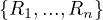⊂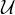, where identifies the set of all possible relations, a relational algebra operator is a function
being  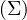 the power set of Σ.
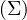 the power set of Σ.
Example 1.1. As an example, we can take Σ = 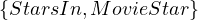, StartsIn = , MovieStar = . In this case, an operator Op could be such that produces the relation that contains all names of films in which some movie stars in MovieStar born in 1960 participated.
In this example, we have explained what we would like our operator to do, but we need some way to actually compute this. For this, there are some basic operators that can be combined to create complex operators.
Let’s define a set of operators that are useful:
The union of two relations with the same schema returns another relation with the same schema and all tuples in any of the two input relations: Let Ri,Rj ∈ Σ such that Ri ≃ Rj, then
Note, nonetheless, that the result of the operator ∪ is different in set-based relations than in bag-based relations.
The intersection of two relations with the same schema returns another relation with the same schema and all tuples in both of the two input relations: Let Ri,Rj ∈ Σ such that Ri ≃ Rj, then
The difference of two relations with the same schema returns another relation with the same schema and all tuples in the first input relations which don’t appear in the second input relation: Let Ri,Rj ∈ Σ such that Ri ≃ Rj, then
The selection operator applies a condition on the values of the tuples of the input relation and returns only those tuples that fullfil the condition: Let R ∈ Σ and P a condition, then
Example 1.5. An example of the operator σP:
In this case, the condition P is: ’the value of A is bigger than or equal than 3’.
The projection operator returns all tuples of the input relation, but deleting all unspecified attributes: Let R ∈ Σ and Aj1,...,Ajk ∈ ~ R, then
The result of this operation also depends on the type of relations used.
The cartesian product of two relations with disjoint schemas returns a relation with the schema resulting of combining both schemas and with all possible tuples made out of tuples from the first relation and tuples from the second relation: Let Ri,Rj ∈ Σ such that their schemas are disjoint, then
The natural join of two tuples whose schemas share at most one attribute returns a relation with the schema resulting of combining both schemas and with all possible tuples made out of tuples from the first relation and tuples from the second relation with the condition that they have the same value for the shared attribute: Let Ri,Rj ∈ Σ such that their schemas share at most one attribute, A, then
Note that if the relations are disjoint, the natural join gives the same results as the cartesian product.
The theta join of two relations given a condition P returns all the tuples in the cartesian product of the two relations that fullfil the condition P: Let Ri,Rj ∈ Σ and P a condition, then
The left/right/full outer join operators are similar to the theta join, but for those tuples in the left/right/both relation that does not find a match in the other relation, it returns a new tuples with the values of the tuple and the rest of the attributes empty.
The renaming operator changes the name of a relation, ρ = R′. The feature rename operator changes the
name of an attribute in a relation, A → A′.
= R′. The feature rename operator changes the
name of an attribute in a relation, A → A′.
The aggregation operator of a relation returns another relation in which the tuples that share the value of the aggregating attribute are merged using an aggregate function: Let R ∈ Σ, with R ~, A the aggregating attribute and f1,...,fn the aggregating functions for the rest of the attributes, then
where AjvA is a short notation for
i.e. all values in R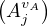 such that come from a tuple whose values for the attribute A is v.
Now, we can build expressions in relational algebra to get new relations from current ones. Let’s return to Example 1.1, we can define the operator Op such that produces the relation that contains all names of films in which some movie stars in MovieStar born in 1960 participated as:
Relational algebra is the theoretical basis of the SQL language, meaning SQL is designed as an implementation of the relational algebra operators that we have seen so far. The equivalent SQL sentence to the last RA operator, OP, is
As explained in [4], translating an arbitrary SQL query into a logical query plan, or, equivalently, a relational algebra expression, is a complex task. Let’s first give some examples.
Example 1.12. We are going to work with some examples now. Let’s our database have the following relations:
Movie(title: string, year: int, length: int, genre: string, studioName: string, producerCERT: int)
MovieStar(name: string, address: string, gender: char, birthdate:date)
StarsIn(movieTitle: string, movieYear: string, starName: string)
MovieExec(name: string, address: string, CERT: int, netWorth: int)
Studio(name: string, address: string, presCERT: int)
SQL:
RA:
SQL:
RA:
At this point, one can understand that it is not easy at all to automatize this procedure of translating from SQL to RA. Not only the process is not trivial as is, but it is also needed to take into consideration that one SQL sentence can be translated into several equivalent RA expressions, which will ultimately be executed in a computer and the election of the translation to execute will affect the efficiency of the program. Let’s review the paper [4], explaining each of the translations, assuming set-based relations.
A query of the form:
in which the condition does not involve subqueries, we can translate it as
In general, queries in which there are subqueries in the WHERE clause can arise, and they need to be translated, too. The property used in these cases is that subqueries occurring in the WHERE clause that use the operators =,<,>,<=,>=,<>,EXISTS,IN,NOT EXISTS,NOT IN or the quantifiers ANY or ALL can all be rewritten to use the operators EXISTS and NOT EXISTS.
Proof. Let’s proof some of the results:
The result using the EXISTS and NOT EXISTS operators is obvious.
Case = ANY : a query would look like the following:
An equivalent query is:
Case = ALL:
An equivalent query is:
The rest of the cases binaryOP + ANY |ALL is similar.
Case IN:
An equivalent query is:
The case NOT IN is analogous. __
Example 2.1. Let’s see some examples from the paper:
The query
is equivalent to:
The query
is equivalent to:
Without loss of generality, we can now assume that all subqueries in the where clause are of the form EXISTS or NOT EXISTS.
Now, to translate a query with subqueries, in which an arbitrary number of subqueries inside the subqueries may arise, it seems logical to proceed recursively. The idea is to translate into RA from inner queries to outer queries. For subqueries that do not contain more subqueries, we could translate them as in Section 2.1. The problem in this case is that the subqueries can refer to attributes of relations appearing in the FROM clause of the outer queries. This is known as correlated queries.
The outer relations from which a correlated subquery uses certain attributes are called context relations. The attributes of the context relations are the parameters of the subquery1 .
To translate a SELECT-FROM-WHERE statement that is used as a subquery, we must make the following modifications to the method from Section 2.1:
We must add all context relations to the cartesian product of the relations in the FROM list.
We must add all parameters as attributes to the projection π.
Now, let’s focus on a particular case:
Suppose we have a query of the general form:
And the following assumption: the condition is a conjunction (AND) of SELECT-FROM-WHERE subqueries, possibly with an additional condition that does not contain subqueries, i.e., the condition is of the form
where ϕ denotes the subquery-free condition and Q1,...,Qn,P1,...,Pm are select statements. The translation is done in four steps:
Translate ϕ.
De-correlate the EXISTS subqueries.
De-correlate the NOT EXISTS subqueries.
Apply the projection ΠSelect-list.
It is translated using the method of Section 2.1, but the following context relations must be included:
All context relations for which parameters occur in ϕ.
All context relations for which parameters only occur in NOT EXISTS subqueries.
We will obtain a expression of the form
where E is a cartesian product of all the context relations involved. From now on, we are going to adapt and refine E gradually when de-correlating the subqueries.
Example 2.4. Consider the following query, with relations R and S:
Let’s denote the queries, from outer to inner: Q1,Q2 and Q3. Q1 does not have a subquery-free part, so we continue with Q2. The subquery-free part of Q2 is:
So it can be translated as
Note that S is a context relation for this subquery-free part, but no parameter from it is needed and it is not only used in NOT EXISTS clauses, so it is not added.
After translating the subquery-free part, we translate all the subqueries EXISTS as explained in Section 2.3, obtaining an algebra expression EQi.
Let A1,...,Ap be the list of parameters of context relations of Qi. We can translate EXISTS by joining E with the space of parameters for EQi, namely ΠA1,...,Ap :
Example 2.5. Let’s continue the translation of Q2 from Example 2.4. Now, we have to translate Q3 as:
At this point, we have
and by joining E and EQ3 on the parameters of Q3 we ensure that we are taking the correct tuples from E and EQ3. In particular, we are taking the tuples in R1 for which tuples in R2,R3 and S exist that satisfy the requirements of Q2:
Note that this expression can be simplified:
because we are joining R2 with a subset of itself, so we will obtain the entire subset.
Remark 2.1. This simplification can always be done. Before joining with ΠA1,...,Ap, we can remove from E all context relations for Qi, because they are already present in the parameter space. This way, denoting by Ê the adapted E, we can change what we explained later for
Example 2.6. Now we can translate Q2 as follows:
Notice how R2 has been removed from the cartesian product of the subquery-free part of Q2 that we translated in the first of the examples.
Finally, the translation of the entire Q1 is
where ρR1 and S have been removed from the cartesian product originating from the translation of the
subquery-free part of Q1 (the FROM clause).
and S have been removed from the cartesian product originating from the translation of the
subquery-free part of Q1 (the FROM clause).
Now we can de-correlate the NOT EXISTS subqueries. We start translating Pj into a RA expression EPj. Again, we consider the parameters A1,...,Ap of the context relations of Pj. The difference now is that we don’t join E and EPj, but we perform an anti-join:
where
In this anti-join, it necessary that R contains all attributes of S, and this is the reason why it is needed to add all context relations appearing only in NOT EXISTS clauses to the cartesian product of the subquery-free part of the query.
Finally, we apply the projection ΠSelect-list.
Until now, we have supposed that all relations involved are set-based, but this is not the case in real databases, where duplicates can occur. In this case, the requirements for flattening into a normal join are:
There is a uniqueness condition that ensures that the subquery does not introduce any duplicates if it is flattened into the outer query block.
Each table in the subquery’s FROM list (after any view, derived table, or subquery flattening) must be a base table.
The subquery is not under an OR.
The subquery is not in the SELECT list of the outer query block.
The subquery type is EXISTS, IN, or ANY, or it is an expression subquery on the right side of a comparison operator.
There are no aggregates in the SELECT list of the subquery.
The subquery does not have a GROUP BY clause.
The subquery does not have an ORDER BY, result offset, or fetch first clause.
If there is a WHERE clause in the subquery, there is at least one table in the subquery whose columns are in equality predicates with expressions that do not include any column references from the subquery block. These columns must be a superset of the key columns for any unique index on the table. For all other tables in the subquery, the columns in equality predicates with expressions that do not include columns from the same table are a superset of the unique columns for any unique index on the table.
In this section, we are going to explain System R, which is a pioneering SQL system developed by IBM Research and which was released in 1976, with an accompanying paper, [1].
System R was an experimental prototype database management system, with complete capability, including application programming, query capability, conccurent access support, system recovery, etc.
System R is composed by several parts:
Relational Storage Interface (RSI): internal interface which handles access to single tuples of base relations.
Relational Storage System (RSS): the supporting system of the RSI. It is a complete storage subsystem in the sense that it manages devices, space allocation, deadlock detection,... It maintain indexes on selected fields of base relations, and pointer chains across relations.
Relational Data Interface (RDI): the external interface that can be called directly from a programming language. The SQL language is embedded within the RDI, and is used as the basis for all data definition and manipulation.
Relational Data System (RDS): supports the RDI, provides authorization, integrity enforcement and support for alternative views of data. The RDS contains an optimizer which plans the execution of each RDI command, choosing a low cost access path to data from among those provided by the RSS. The RDS also maintains a set of catalog relations which describe the other relations, views, images, links, assertions, and triggers known to the system.
A logical diagram of this architecture is depicted in Figure 1.
The RDI interfaces SQL to a host programming language by means of a concept called a cursor, which is a name used at the RDI to identify a set of tuples called its active set, and to maintain a position on one tuple of the set. The cursor is associted with a set of tuples by means of the RDI operator SEQUEL; the tuples may then be retrieved, one at a time, by the RDI operator FETCH. The program must first give the system the addresses of the program variables to be used by means of the RDI operator BIND.
Example 3.1. Here, the host program identifies variables X and Y to the system and then issues a query whose results are to be placed in these variables:
The SEQUEL operator is associating the cursor C1 with the set of tuples which satisfy the query and positioning it just before the first such tuple. The optimizer is invoked to choose an access path whereby the tuples may be materialized, but no tuples are actually materialized in response to the SEQUEL call. The materialization is done as they are called for, one at a time, by the FETCH operator. Each call to FETCH deliver the next tuple of the active set into program variables X and Y. In Figure 2 we can see an example of the stored data in the relation EMP and the resulting Active Set. In this case, after calling FETCH(C1), the values of the variables would be X=”Mike” and Y=800. If another call to FECTH(C1) were made, then the variables would be overrided to X=”Sarah” and Y=810.
| EMP | ||
| NAME | SAL | JOB |
| “John” | 1000 | “CEO” |
| “Mike” | 800 | “PROGRAMMER” |
| “Sarah” | 810 | “PROGRAMMER” |
| Active Set | |
| NAME | SAL |
| “Mike” | 800 |
| “Sarah” | 810 |
The DESCRIBE operator returns the degree and the data types of the active set. The degree is the number of attributes. It is useful when this information is not known in advanced, so it can be inputted to the FETCH operator.
The operator OPEN is used to associate a cursor with an entire relation.
Each cursor remains active until an RDI operator CLOSE or KEEP is issued on it. CLOSE deactivates the cursor, while KEEP causes the tuples identified by a cursor to be copied to form a new permanent relation in the database.
The operator FETCH_HOLD is as FETCH, but it also acquires a hold on the tuple returned, which prevents other users from updating or deleting it until it is explicitly released by the RELEASE operator or until the holding transaction has ended.
The SQL statement CREATE TABLE is used to create a new base relation. For each field, the field name and data type are specified. When a relation is no longer useful, it may be deleted by issuing a DROP TABLE statement.
Access paths include images and binary links. Images are value orderings maintained on base relations by the RSS, using multilevel index structures2 , associating a value with one or more tuple identifiers (TIDs), which are internal addresses allowing rapid access to a tuple. One image per relation can have the clustering property, which causes tuples whose sort field values are close to be physically stored near each other. Binary paths are access paths in the RSS which link tuples in one relation to related tuples of another relation through pointer chains. They are employed in a value dependent manner: the user specifies that each tuple of Relation 1 is to be linked to the tuples in Relation 2 which have matching values in some field/s, and that the tuples on the link are to be ordered in some way3 . A link may be declared to have the clustering property.
A view is a relation derived from one or more relations, and can be used in the same way as a base table. It can be defined using the DEFINE VIEW statement. Views are updated automatically when changes are made to the base tables on which they are defined. When the statement DROP VIEW is issued, the indicated view and all other views defined in terms of it disappear from the system. Modifications to views are only allowed if the tuples of the view are associated one-to-one with tuples of an underlying base relation.
The statement KEEP TABLE causes a temporary table to become permanent.
The statement EXPAND TABLE is used to add a new field to an existing table.
A transaction is a series of RDI calls which the user wishes to be processed as an atomic act. A transaction starts when the user issues a BEGIN_TRANS statement and ends when END_TRANS is called. Save points may be specified by means of the operator SAVE. When a transaction is active, the user may go back to the beginning of it, or to any save point using RESTORE.
Regarding authorization, System R does not require a particular individual to be the DB administrator, but allows each user to create his own data objects by executing the create staatements. The creator of an object has full authorization on it. The user can gran selected capabilities for his objects to other users with the statement GRANT.
About integrity assertions, any SQL predicate may be stated as an assertion about the integrity of data in a base table or view. When an assertion is made by an ASSERT statement, its truth is checked. If true, the assertion is atuomatically enforced until it is explicitly dropped by a DROP ASSERTION statement. Assertions may describe the permissible states of the database or the permissible transitions in the database. For this latter purpose, the keywords OLD and NEW are used in SQL to denote data values before and after modification.
If an assertion is IMMEDIATE, it cannot be suspended within a transaction, but is enforced after each data modification. Also, integrity points may be established by the SQL ENFORCE INTEGRITY.
Triggers are a generalization of the concept of assertion, causing a prespecified sequence of SQL statements to be executed when some triggering event occurs.
Catalogues are maintained by the RDS, and they describe the information of the relations, views, images, links, assertions and triggers known to the system. Each user may access a set of views of the system catalogs which contain information pertinent to him. Users cannot modify a catalog directly, but it is modified indirectly, when tables are created, an image is dropped, etc. A user can enter commments into his various catalog entries by means of the COMMENT statement.
As we have seen, cursors are pointers to specific tuples on a resulting table from a query. They can be used to retrieve the values of the tuples individually or to store the tables into the database as permanent relations. Cursors are still used, although they are often a low level feature that is not directly used by users, by it is used by the DBMS to provide higher level features to the user.
In addition, SQL can be used to maniputale either one tuple at a time or a set of tuples with a single command. The current tuple of a particular cursor may be selected for some operation using the predicate CURRENT TUPLE OF CURSOR.
Clustering images, as we have explained, are images (indexes) that can be used to physically store the data in the same order as it is indexed. At most one image per relation can have the clustering property. The reason is simple: it is not possible to store the same data physically in two different orders.
The objective of the optimizer is to find a low cost means of executing a SQL statement, given the data structures and access paths available. For this, it attempts to minimize the expected number of pages to be fetches from disk into the RSS buffers. The cost of CPU instructions is also taken into account by means of an adjustable coefficient, H, which is multiplied by the number of tuple comparison operations to convert equivalent page accesses. H is useful to adjust the metric for compute-bounded systems or disk access-bounded systems.
The optimizers follows some steps when it receives a SQL statement:
Classify the SQL statement into one of several statement types.
Examine the system catalogs to find the set of images and links which are pertinent to the given statement.
A rough decision procedure is executed to find the set of reasonable methods of executing the statement.
If there is more than one reasonable method, the expected cost formula is evaluated for each method, and the minimizing method is choosing.
The following parameters, available in the system catalogues, are taken into account:
relation cardinality: number of tuples
number of pages occupied by the relation
average number of tuples per page:
image cardinality: number of distinct sort fields values in a given image.
coefficient of CPU cost: 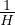 is the number of tuple comparisons which are considered equivalent in cost to one disk page access.
An image match a predicate if the sort field of the image is the field which is tested by the predicate.
In the case of a simple query on a single relation, the optimizer compares the available images with the predicates of the query, in order to determine which of the following eight methods are available:
: use a clustering image which matches a predicate whose comparison operator is ’=’. The expected cost, C is
that is: from I values, we want one, so we need to retrieve tuples on average. These fit in 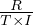 pages.
: use a clustering image which matches a predicate whose comparison operator is not ’=’. Assuming half the tuples satisfy the predicate, we have
The idea is the same as before, but now we are assuming to retrieve tuples on average.
: use a non-clustering image which matches a predicate whose comparison operator is ’=’. In this case, we have
because now we might find only one correct tuple per page.
: use a non-clustering image which matches a predicate whose comparison operator is not ’=’. It is
: use a clustering image which does not match any predicate. We would scan the image and test each tuple against all predicates. The expected cost is
where N is the number of predicates. So, we recover R tuples, distributed in 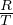 pages. In addition to this, we need to perform R×N comparisons (N predicates per tuple), which are weighted by the coefficient of CPU, H.
: use a non-clustering image which does not match any predicate:
: use a relation scan, where this relation is the only one in its segment and test each tupple agains all predicates:
: use a relation scan, where there are other relations sharing the segment. The cost is unknown, but is greater than 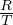 + H × R × N.
The optimizer then chooses a method from this set, according to the following rules:
If Method 1 is available, it is chose.
If exactly one among Methods 2,3,5 and 7 are available, it is chosen. If more than one method is available in this class, the expected cost formulas for these methods are evaluated and the method of minimum cost is chosen.
If none of the above methods are available, the optimizer chooses Method 4, if available.
Else, Method 6, if available.
Else, Method 8.
In the release paper, only 4 methods are explained, although they say the system takes more methods into account.
: use images on join fields. A simultaneous scan of the image on R1.A and the image of R2.A. The idea is having two pointers, and advance them coordinately, using the fact that images are ordered to find matches.
: sort both relations. R1 and R2 are ordered using their cluster images and two files, F1 and F2 are created. F1 and F2 are sorted on field A. The resulting sorted files are scanned simultaneously and the join is performed.
: multiple passes. R1 is scanned, storing the pertinent fields into a main memory data structure, W. If space in main memory is available to insert a subtuple, S, it is inserted. If there is no space and S.A is less than the current highest value of A in W, S is discarded. After completing the scan of R1, R2 is scanned using its clustering image and a tuple S′ of R2 is obtained. Then, W is checked for the presence of S′.A. If present, S′ is joined to the appropriate subtuple in W. This process continues until all tuples of R2 have been examined. If any R1 subtuples were discarded, another scan of R1 is made to form a new W consisting of subtuples with A value greater than the current highest. R2 is scanned again and the process is repeated.
: the TID algorithm. Basically, it works as follows:
Obtain the TIDs of tuples from R1 which satisfy additional restrictions to the join. Sort them and store the TIDs in a file F1. Do the same with R2, storing the TIDs in F2.
Perform a simultaneous scan over the images on R1.A and R2.A, finding the TID pairs of tuples whose values for A match.
Check each pair 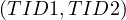 to see if TID1 is present in W1 and TID2 is present in W2. If they are, the tuples are fetched and joined.
A method cannot be applied unless the appropriate access paths are available. The performance of a method depends strongly on the clustering of the relations with respect to the access paths. In the paper, four situation are presented in which the optimizer would decide between the four methods, but they claim to detail the cost formulas on a later paper:
: there are clustering images on both R1.A and R2.A, but not no images on R1.B or R2.C, which are additional conditions. Method 1 is always chosen.
: there are non-clustering images on R1.A and R2.A, but no images on R1.B or R2.C. Method 3 is chosen if W fits into the main memory buffer at once. Otherwise, Method 2 is chosen.
: there are clustering images on R1.A and R2.A and non-clustering images on R1.B or R2.C. Method 4 is always chosen.
: there are non-clustering images on R1.A,R2.A,R1.B and R2.C. Method 3 is chosen if W fits into the main memory buffer. Otherwise, Method 2 is chosen if more than one tuple per disk page is expected to satisfy the restriction predicates. In other cases, Method 4 is chosen.
After analyzing a SQL statement, the optimizer produces an Optimized Package (OP) containing the parse tree and a plan for executing the statement.
If the statement is a query, the OP is used to materialize tuples as they are called for by the FECTH command.
If the statement is a view definition, the OP is stored in the form of a Pre-Optimized Package (POP), which can be fetched and utilized whenever an access is made via the specified view. If any change is made to the structure of a base relation or to the access paths maintained on it, the POPs of all views defined on that relation are invalidated, and each view must be reoptimized to form a new POP.
When a view is accessed via the RDI operators OPEN and FETCH, the POP for the view can be used directly to materialize the tuples of the view.
Here, we are going to examine how PostgreSQL is similar or different to the characteristics of System R:
Catalog: PostgreSQL also maintains a catalog, with similar information about the relations, indexes, views,... of the system.
Tuple Identifier (TID): PostgreSQL also has the concept of TID, being it a pair 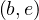, where b indicates the disk block in which the tuple is stored, and e is the position where the tuple starts.
Image / Clustering image: the concept of image is called just index in PostgreSQL, but they are extended. PostgreSQL defines several types of indexes, and not all of them are ordered. For instance, a Hash Index is an unordered index, but a BTree index is an ordered index, which would be the most similar one to the concept of image in System R. PostgreSQL also allows to cluster, but the clustering is made at one point in time, using a particular index: this means that subsequent insertions will not be done to maintain the clustering property4 .
View: views in PostgreSQL are very similar to views in System R. They can be thought as a stored query, very similar to what happens in System R. Views are automatically updated when the underlying tables are updated. The difference comes when one tries to directly modify a view. PostgreSQL has the concept of Updatable view, which are views that can be modified with INSERT, UPDATE or DELETE. This views are views that meet the conditions:
The defining query of the view must have exactly one entry in the FROM clause, which can be a table or another updatable view.
The defining query must not contain one of the following clauses at the top level: GROUP BY, HAVING, LIMIT, OFFSET, DISTINCT, WITH, UNION, INTERSECT, and EXCEPT.
The selection list must not contain any window function , any set-returning function, or any aggregate function such as SUM, COUNT, AVG, MIN, and MAX.
If one tries to modify a updatable view, the system will automatically generate the query that performs the appropriate modification in the base table. Note that there are some columns that are not modifiable: if one tried to modify one of these columns, an error would be raised.
Cost-based query optimization: PostgreSQL also has an optimizer that select the best execution plan among several equivalent plans with the objective of minimizing the expected cost.
Access path: access path specify the path chosen by the system to retrieve the requested tuples from a relation. As we have seen so far, System R has basically five types of access paths: sequential scan, images, binary paths, order-and-scan and TID-scan. PostgreSQL defines a wider variety of access path: sequential scan, order-and-scan, TID-scan, hash indexes, BTree indexes, BitMap indexes,...
As we have seen until now, there are alternative ways to evaluate a given query: there are equivalent RA expression for the same query, and also there are different methods that can physically execute a given query.
An evaluation plan defines exactly what algorithm is ued for each operation and how the execution of the operations is coordinated.
Cost difference between evaluation plans for a query can be enormous. The general steps in cost-based query optimization are as in System R:
Generate logically equivalent expressions using equivalence rules.
Annotate resultant expressions to get alternative query plans.
Choose the cheapest plan based on the estimated cost.
The estimation of the cost is based on:
Statistical information about relations.
Statistics estimation for intermediate result.
Cost formulae for algorithms, computed using statistics.
Most database support the EXPLAIN <QUERY> statement, which displays the plan chosen by the optimizer, along with the cost estimates that it uses for decision.
Some databases also support EXPLAIN ANALYSE <QUERY>, which shows actual runtime statistics found by running the query, in addition to showing the plan.
Some databases show the cost as
where f is the cost of delivering the first tuple and l is the cost of delivering all results.
Now, we are going to list some equivalence rules:
Conjunctive selection can be deconstructed into a sequence of individual selections:
Selection is commutative:
In a sequence of projections, where L1 ⊂ L2 ⊂ ... ⊂ Ln, only the outermost one is needed:
Selections can be combined with cartesian products and theta joins:
Theta join operations are commutative
And they are associative, in a soft manner:
The natural join is associative:
The thetha join is associative in a soft sense:
where P3 involves attributes that are present in the three relations.
When we can decide the order of the joins, we would choose the smaller join to be performed before, so that we compute and store a smaller temporary relation.
The selection operation distributes over the theta join operation in the following two situations:
When all the attributes in P0 involve only the attributes of one of the expressions being joined:
When P1 involves only the attributes of E1 and P2 involves only the attributes of E2:
The projection operation distributes over the theta join operation as follows: If P involves only attributes from L1 ∪ L2:
Similar equivalences hold for outerjoin operations.
Union and intersection are commutative:
Union and intersection are associative:
The selection operation distributes over ∪,∩ and -:
The projection operation distributes over union:
Example 4.1. Pushing selections.
Query: find the names of all instructors in the Music department, along with the title of the courses that they teach.
A first RA expression could be the following:
It can be transformed using rule 7a:
The advantage of doing this is taht by performing the selection as early as possible we are reducing the size of the relation to be joined.
Example 4.2. Pushing projections.
We start with the RA expression:
When we compute
we obtain a relation with schema . Equivalence rule 8 allows to push projections, eeliminating unneeded attributes from intermediate results to get:
This is useful because performing the projection as early as possible reduces the size of the relation to be joined. Note that course_id needs to be projected because it is needed for the join.
Consider the expression
In this case, we could compute
first, and then join the result with the left relation. The problem with this approach is that doing this join first seems more likely to be large, as only a small fraction of the university’s instructor are going to be from the Music department. So it is better to leave the query as is.
Query optimizers use equivalence rules to systematically generate expressions equivalent to the given expression, which is a first translation of the query.
All the equivalent expressions can be generated with the following approach:
The optimizer takes into account the cost of each operator and the statistics of the input relations, such as the number of tuples and the sizes of the tuples. Also, inputs can be results of sub-expressions, so we need to estimate estatistics of these results. For this purpose, more statistics, such as the number of distinct values for an attribute, are used.
Once we have generated different equivalent expressions, we need to decide which one to use to execute the query and get the results. For this, we must consider the interaction of evaluation techniques, because choosing the cheapest algorithm for each operation disregarding the others may not yield best overall algorithm. For example, a merge-join may be costlier than a hash-join, but may provide a sorted output which could reduce the cost for an outer level aggregation.
Practical query optimizers incorporate elements of two broad approaches:
Search all the plans and choose the best plan in a cost-based fashion.
Uses heuristics to choose a plan.
Problem: find the best join-order for
A first idea could be to check all possibilities and choose the cheapest one. But...
Proposition 4.1. For the best join-order problem, with n relations involved, there are
different possible join orders.
Proof. First, we need to count all possible orderings, i.e. the number of permutations, which is known to be n!. Now, we have to count all possible ways to assign the n-1 needed parenthesis. This is known to be the Catalan number5
Thus, the total amount is
This number is huge, and it is unfeasable to check the whole search space. Thus, a different approach is needed.
Using dynamic programming, the least-cost join for any subset of is computed only once and stored for future use. The algorithm works as follows:
Consider all possible plans of the form
where S1 is any non-empty subset of S.
Recursively compute costs for joinin subsets of S to find the cost of each plan. Choose the cheapest of the 2n - 2 alternatives.
Base case: single relation access plan.
Apply all selections on Ri using best choice of indices on Ri.
When the plan for any subset is computed, we store it and reuse it when it is required again, instead of recomputing it.
The pseudocode is shown in Algorithm 1.
The time complexity of this algorithm is O and the space complexity is O. This is a huge gain with respect to checking the whole search space, but it is still a very high cost.
In left-deep join trees, the right-hand-side input for each join is a relation, not the result of an intermediate join. In Figure 3 we can see an example of what is a left-deep join tree, and what is not.
With this structure, we can reduce the cost of the optimization problem.
For a set of n relations, we can consider n alternatives with one relation as right-hand-side input and the other relations as left-hand-side input.
The time complexity of finding the best join order is in this case O and the space complexity remains the same.
At this points, one might think that it is of no use bothering with optimizing the order of queries, if it so costful, but, in reality, typical queries have a small n, usually less than 10, and a good ordering can change a query from being unfeasable to being executed in an acceptable time.
As we have seen, cost-based optimization is expensive, even using dynamic programming.
Heuristic optimization transforms the query-tree by using a set of rules that typically improve execution performance. These rules can include:
Perform selection early.
Perform projection early.
Peform most restrictive selection and join operations before other similar operations.
Some systems use only heuristics, while others combine the two approaches. A frequently used approach is the following:
Heuristic rewriting of nested block structure and aggregation.
A cost-based join-order optimization for each block.
There is usually an optimization cost budget to stop optimization early if the cost of the plan is less than the cost of the optimizations to be made.
Also, it can be useful to implement plan caching to reuse previouly computed plans if queries are resubmitted.
It is worth to note that even with the use of heuristics, cost-based query optimization imposes a substantial overhead in the computations, but it is worthy for expensive queries. For this reason, optimizers often use simple heristics for cheap queries, and perform a more exhaustive enumeration for more expensive queries.
Statistics of relations are of great importance for improving the performance of the system, because they allow to estimate the cost more accurately.
Some statistical information that is used:
nr the number of tuples in relation r,
br the number of blocks containing tuples of r,
lr the size of a tuple of r,
fr the blocking factor, or the number of tuples that fit into one block. If the tuples of r are stored together physically in a file, then it is
V the number of distinct values that appear in r for attribute A.
Histograms are useful for cost estimation. Histogram can be of two types:
Equi-width: the space is divided into M buckets of the same size.
Equi-depth: the space is divided into M buckets, in such a way that all buckets have the same number of tuples inside.
Many databases store the n most frequent values and their counts, and they construct histogram for the remaining values. Usually, they are computed not on all the actual values, but on a sample of them.
This sampling approach make it possible for the statistics to be outdated, so they need to be recomputed:
Some databases require a ANALYZE (VACUUM) command to be explicitly executed to update statistics.
Others automatically perform the recomputation.
We want to estimate the size of a selection, but this depends on the conditions to fullfil:
σA=v: a simple equality condition size is estimated as the size of the relation, divided by the number of distinct values for attribute A:
Nonetheless:
If the attribute is a key attribute: the estimation is 1.
If the value v is among the most frequent values of attribute A, we can give more accurate estimations.
σA≤v : a simple inequality condition is more complex than before. Let c denote the estimated number of
tuples satisfying the condition. If m = min and M = max are available in the catalog
then:
: a simple inequality condition is more complex than before. Let c denote the estimated number of
tuples satisfying the condition. If m = min and M = max are available in the catalog
then:
So, we approximate by a linear interpolation over the total number of records. Note that if histograms are available, this estimation can be refined by summing all buckets below v and interpolating only in the bucket in which v lies.
When there is a lack of statistical information, c is assumed to be .
For more complex conditions, we need a new definition:
Conjunction, σP1∧...∧Pk: assuming independence, we have
Disjunction, σP1∨...∨Pk : we do the following
: we do the following
which, assuming independence is equal to
So, it is
Negation, σ¬P: this is just
The cartesian product of two relations r1 and r2 contains exactly nr1 ×nr2 tuples, and each tuple occupies lr1 + lr2 bytes.
About the join:
If r1 ∩ r2 = ∅, then r1 r2 is the same as r1 × r2.
r2 is the same as r1 × r2.
If r1 ∩ r2 is a key for r1, then a tuple of r2 will join with at most one tuple from r1, so the number of
tuples in r1 r2 is, at most, the number of tuples in r2.
r2 is, at most, the number of tuples in r2.
If r1 ∩ r2 is a foreign key in r2 referencing r1, then the number of tuples in r1 r2 is exactly the same as
the number of tuples in r2.
r2 is exactly the same as
the number of tuples in r2.
If r1 ∩r2 = is not a key for r1 nor r2: let assume that every tuple t in r1 produces tuples in the join, then the number of tuples in the join is estimated to be
i.e., the number of tuples in the cartesian product, divided by the number of different values for the attribute A in the second relation. This is because each value in r1 will join with more or less values.
If we assume the reverse, i.e., every tuple in r2 produces tuples, then we get
for the same reason.
The lower of these two estimates is probably the most accurate one, so both are computed and the best one is chosen.
This estimates can be improved using histograms, by using the same formula but on each bucket, and summing them up.
nstudent = 5000,fstudent = 50 so bstudent = = 100.
ntakes = 10000,ftakes = 25 so btakes = = 400.
V = 2500, so, on average, each student that has taken a course, has taken 4 courses.
The attribute ID in takes is a foreign key referencing student, in which it is a primary key: V = 5000.
The most accurate estimation in this case is the one using the fact that ID is a foreign key, which implies that the number of tuples is the same as the number of the referencing relation, takes, so
Let’s nonetheless compute an estimate disregarding this:
We choose the lower estimate, c2, which in this case is the same as the one we chose before! But this is no surprise, this will always happen with foreign keys, because V = nr1 if A is key, so we would have
which is the same value that we get using the other estimation. Also, V will be at most nr1, because it is a foreign key, so it cannot have more values than the referenced attribute!
As we know, the disk can be logically seen as a sequence of pages of a certain size. Every file that we store in a computer must be stored in one or more pages. Now, imagine we want to retrieve a file’s content. For this, we need to fetch the data from where it is stored. If we don’t use indexes, we would need to sequentially traverse the disk until we find the desired file.
Example 6.1. Imagine a simplified setup with a disk of N pages and with files that occupy one page. If we need to recover a specific file that is stored in memory, without further information, it would take an average of pages to be fetched.
An index can be used to mitigate this impact. There are multiple types of indexes, but the simplest form of an index is just a map in which each file identifier is associated to the direction of its first byte in memory. This way, only knowing which file we want to recover, we can access it directly using the index.
Example 6.2. In the previous setup, imagine we store an index in the first page. In this scenario, to recover a specific file we need to fetch the first page, look the index to get the direction of our file, and directly fetch the correct page. In total, we would fetch 2 pages.
Properties of dense indexes:
If a key is not listed, the key does not exist.
They can be used in sequential and non-sequential files.
Querying a dense index is more efficient than querying a sequential file because we will likely retrieve less pages from disk to memory.
They are usually ordered, so searchs can be done using the binary search algorithm.
A dense index on a sequential file looks like this:
And on a non-sequential file like this:
If we want to retrieve the segment with key=30, we would do binary search in the index and then we would get the disk direction of this segment.
If we are asked to retrieve a segment with a key that is not in the index, we would directly return an error after searching for it and not finding it, because we are sure there is no segment with that key in the disk. For example, there is no segment with key 25, and so there is no entry in the index with key 25.
Properties of sparse index:
They are also sorted, so binary search can be conducted to find the requested key. In this case, we are looking for the biggest key that is less than the requested key. We then would go to the page where this key is and scan sequentially until we reach the requested key or a key bigger than it, in which case we would return an error.
They need less space than dense indexes.
Can only be used in sequential files, because the basic idea for sparse indexes to work is that data is sorted in the same way as the index.
A sparse index looks like this:
If we want to retrieve the segment with key=30, the procedure is exactly as with a dense index.
If we want to retrieve the segment with key=40, then we would search for 30 (the biggest key smaller than 40), we would go to where it is. Then, we would advance until we found the segment with key=40.
If we want to retrieve the segment with key=25, we would search for 10, we would go to where it is. Then, we would advance until we reached the end of the page, and we would return an error, because now we are sure there is no segment with key=25.
When an index becomes very big, the searchs start to slow down, because the binary search needs to be done over a bigger index, which can even occupy several pages, which would need to be fetched.
When this happen, a possible way to speed up the search is to add a sparse index that points to the already defined index.
Example 6.5. A second level sparse index.
In this diagram we can see a second level sparse index on a sparse index:
If we wanted to retrieve the segment with key=30, we would check the 2nd level sparse index, we would get the page where the index should have this key stored. We would go to this page, and we would find the key=30 already in the index, so we would go to the indicated direction.
Question: does it make sense to use a second level dense index?
No, it would be a copy of the first level index, so we would not gain anything. Second level indexes are sparse. Note, nonetheless, that the first level index can indeed be of any kind.
Question: what is the tradeoff between sparse and dense indexes?
Sparse indexes needs less space to be stored and this also allows to have a bigger part of the index in memory when we need it. On the other hand, dense indexes can tell if any record exists without accessing the files.
Imagine we have a disk with the following data:
A naïve solution would be to just use a dense index, where all the keys are listed repeatedly:
In this case, we are solving the problem of duplicate keys... but we are probably using more space that we wanted. It would be better to have unique keys in the indexes. Thus, a second approach could be to only store the first appearance of each key, and use it to fetch the data, scanning sequentially until all records with the same key have been retrieved. This is illustrated below:
See, nonetheless, that this solution requires that the file is sequentially stored in memory, because when we recover the second segment with key=10, in order to recover the third one, the only possible way is to continue a sequential scan.
Now, a third approach is an intermediate approach: we can use a sparse index with duplicate keys, meaning we index the first key in each page:
In this case, when we want to search for a key, we always need to go to the biggest key that is smaller than the requested one, even if the requested one is in the index keyset. For example, if in the example above we used the indexed direction for key=20, we would miss the first record of this key.
An improved version of this solution is to index only the first new key in each page:
Note that in this case, all keys will be listed once, so we don’t need to retrieve the file for inexistent keys, but sequentially ios required.
If we want to delete a record, we need to make sure that the index is updated if needed. The steps to delete a record are the following:
To delete key K, do a binary search in the index.
Depending if K is in the index or not:
If K is not in the index we visit the direction of the biggest key that is smaller than the requested one. We advance until we find the record with key K and we delete it.
If K is in the index, we visit its direction and we delete it. Now, two possibilities arise:
If there are more records in the same page, we shift them up, and we update the key.
If there no more records in the same page, we delete the key from the index and we shift the rest of the keys up.
Example 6.7. Case 2.(b).i.: DELETE 30
| Initial state | Second state | Final state |
| Legend
| ||
| Red | Delete | |
| Yellow | Update
| |
Example 6.8. Case 2.(b).ii.: DELETE 30 and 40
| Initial state | Second state | Final state |
| Legend
| ||
| Red | Delete | |
| Yellow | Update
| |
In this case, we will always find the keys to delete in the index, so the steps are easier:
To delete key K, do a binary search on the index.
Delete records in the corresponding page, shifting up the rest of the records to not leave holes.
Update all shifted records.
Example 6.9. Deletion from dense index: DELETE 30
| Initial state | Second state | Final state |
| Legend
| ||
| Red | Delete | |
| Yellow | Update
| |
We need to follow the next steps6 :
We want to insert record with key K. First, we do a binary search to see where it should be located.
Now, in the first page that it can be located according to the index, two things can happen:
If there is space for the record: we insert it.
If there is not space for the record: we need to shift the following records down, updating the necessary index entries.
| Initial state | Second state | Final state |
| Legend
| ||
| Red | Delete | |
| Yellow | Update
| |
| Green | Insert | |
Imagine we have an unordered file in memory, which we would like to be able to traverse in order without implying great costs. If we try to do this by sequentially scanning the disk, we would need to fetch several times each page and it would be highly inneficient, so we could think on using indexes to solve this problem.
As we have seen, sparse indexes cannot be used with unordered files (some records would be lost), so our only option here is to use an ordered dense index that enables us to recover each record in the desired order. Now, as we are indexing the whole file with an dense index, it is likely that the index is huge, so it seems convenient to add a second level sparse index to speed things up even more.
This is a secondary index:
Again, duplicate keys pose a problem to secondary indexes. Think in the following setup:
Here, the solutions that we proposed before don’t work, because for them we needed sequentially stored files. In this case, again, the naïve solution is a dense index:
The problem with this solution is that this cause an excessive overhead, both in disk space (we are storing repeatedly the same keys) and in search time (because the index keyset needs to be accessed several times per key). An alternative is to store only once each key, and associate a list of pointers:
But this has the problem that the index entries can have different sizes, which difficult the search.
Another idea is to use buckets of pointers:
This structure is very helpful in some situations, for example when we want to get data with some conditions that involves different fields indexed.
Example 6.11. Imagine the relation EMP(name,dept,floor), with a primary index on name and two secondary indexes with bucket structure in dept and floor.
Now, let’s say we want to retrieve all employees in the department ’Toy’ and in floor 2. Our structure make this query very easy:
As we can see, it is possible to use both indexes and then fetch only those records that are return by the two of them!
This section is adapted from [2].
B-trees automatically maintain as many levels of index as is appropriate for the size of the file being indexed and manage the space on the blocks they use so that every block is between half used and completely full.
A B-tree organizes its blocks into a tree that is balanced, meaning that all paths from the root to a leaf have the same length. A BTree can be visualized in Figure 4.
There is a parameter n associated with each B-tree index, and this parameter determines the layout of all blocks of the B-tree. Each block will have space for n search-key values and n + 1 pointers.
We pick n to be as large as will allow n + 1 pointers and n keys to fit in one block.
Example 7.1. Suppose our blocks are 4096 bytes. Also let keys be integers of 4 bytes and let pointers be 8 bytes. If there is no header information kept on the blocks, then we want to find the largest integer value of n such that 4n + 8(n + 1) < 4096. That value is n = 340.
There are several important rules about what can appear in the blocks of a B-tree:
The keys in leaf nodes are copies of keys from the data file. These keys are distributed among the leaves in sorted order, from left to right.
At the root, there are at least two used pointers. All pointers point to B-tree blocks at the level below.
At a leaf, the last pointer points to the next leaf block to the right, i.e., to the block with the next higher keys. Among the other n pointers in a leaf block, at least of these pointers are used and point to data records; unused pointers are null and do not point anywhere. The ith pointer, if it is used, points to a record with the ith key.
At an interior node, all n+1 pointers can be used to point to B-tree blocks at the next lower level. At least of them are actually used (but if the node is the root, then we require only that at least 2 be used, regardless of how large n is). If j pointers are used, then there will be j—1 keys, say K1,K2,...,Kj-1. The first pointer points to a part of the B-tree where some of the records with keys less than K1 will be found. The second pointer goes to that part of the tree where all records with keys that are at least K1, but less than K2 will be found, and so on. Finally, the jth pointer gets us to the part of the B-tree where some of the records with keys greater than or equal to Kj-1 are found. Note that some records with keys far below K1 or far above Kj-1 may not be reachable from this block at all, but will be reached via another block at the same level.
All used pointers and their keys appear at the beginning of the block, with the exception of the th pointer in a leaf, which points to the next leaf.
In Figure 4, the chosen n is 3.
Suppose we want to find a record with key K. The procedure is:
Base case: if we are at a leaf node, look among the keys. If the ith key is K, then the ith pointer is the one that we were looking for.
Inductive case: if we are at an interior node with keys K1,...,Kn we find i such that Ki-1 ≤ K < Kn, or 1 if K < K1. We choose the ith pointer to continue the search.
The path to be followed is colored green:
In the root node, K1 < K and and there are no more keys, so choose i = 2.
In the next node, we find K1 < K < K2, so choose i = 2.
In the leave node, we find K2 = K, so choose i = 2.
BTrees allow for a very efficient way to process range queries, that is, recover all records with keys lying in a given range . The procedure is:
Perform a lookup for Kmin, whether it is found or not, we will reach the correct leaf node.
We traverse all leaf nodes until we find a key bigger than Kmax.
Example 7.3. Search for range .
It is colored in green all the nodes that would be accepted into the range query. The order is up-down and left-right in the leaf level.
The insertion is, in principle, recursive:
We try to find a place for the new key in the appropriate leaf, and we put it there if there is room.
If there is no room in the proper leaf, we split the leaf into two and divide the keys between the two new nodes, so each is half full or just over half full.
The splitting of nodes at one level appears to the level above as if a new key-pointer pair needs to be inserted at that higher level. We may thus recursively apply this strategy to insert at the next level: if there is room, insert it; if not, split the parent node and continue up the tree.
As an exception, if we try to insert into the root, and there is no room, then we split the root into two nodes and create a new root at the next higher level; the new root has the two nodes resulting from the split as its children. Recall that no matter how large n (the number of slots for keys at a node) is, it is always permissible for the root to have only one key and two children.
First, we lookup for the place where the record should be inserted.
As there is not enough place, we need to split the node.
Now, the key of the new node needs to be inserted into the parent node. But it is also full, so it needs to be splitted, too.
ç
In the root node, the smaller key reachable from that node needs to bu inserted. In this case, the newly inserted one.
The steps to delete record with key K are:
Lookup for the record.
Delete the record from the data.
Delete the key-pointer pair from the BTree.
If the node from which we deleted still has the minimum number of pointers, that’s it. But it is possible that the node is less occupy than the minimum required after the deletion. We need to do one of two things:
If one of the adjacent siblings of node N has more than the minimum number of keys and pointers, then one key-pointer pair can be moved to N, keeping the order of keys intact. Possibly, the keys at the parent of N must be adjusted to reflect the new situation.
The hard case is when neither adjacent sibling can be used to provide an extra key for N. However, in that case, we have two adjacent nodes, N and a sibling M; the latter has the minimum number of keys and the former has fewer than the minimum. Therefore, together they have no more keys and pointers than are allowed in a single node. We merge these two nodes, effectively deleting one of them. We need to adjust the keys at the parent, and then delete a key and pointer at the parent. If the parent is still full enough, then we are done. If not, then we recursively apply the deletion algorithm at the parent. This process is called coalesce siblings.
First, we find the correct node and delete the record.
Now, the node left only has one pointer, so we need to fix this. As its left sibling node has 3 pointers, we can transfer the biggest one.
Also, we need to update the parent node.
Example 7.6. Now, delete K = 11.
First, we locate the correct node and delete the record. Again, the node ends up with less pointers than it should, but now the left sibling does not have more than the minimum amount of pointers (it has the minimum) and the node does not have right siblings (the node to the right is from another parent), so we need to merge the two siblings.
We saw the steps to process a query: first, the query needs to be translated into and RA expression, which can then be modified using equivalence rules to get different expressions that lead to the same result. Then, it is needed to estimate the cost of each expression and to take the one that gives the minimum expected cost. For this, we need also to decide between several ways to access the data, e.g., whether to use an index or not, to order the data or not,... This is called physical query planning.
There are several ways to measure cost, but we are going to be using the number of disk blocks that must be read or written to execute a query plan.
We will also use different parameters:
B: number of blocks containing the tuples of relation R.
f : maximum number of tuples of R per block.
: maximum number of tuples of R per block.
S : size of tuples of R.
: size of tuples of R.
M: memory blocks available.
HT: amount of levels in index i.
LB: amount of leaf nodes in index i.
A join operation can be computed in several ways, depending on the options available.
The simplest and most costly option is an iteration join, which just performs a double loop over the two relations. The pseudocode can be read in Algorithm 2.
The merge join consists in first sorting the relations if they are not sorted, and then scanning them making use of the fact that they are ordered using the same attribute. The pseudocode can be read in Algorithm 3.
The index join uses an index defined on the joining attribute on one of the relations. The pseudocode can be read in Algorithm 4.
The hash join uses a hash function on the joinin attribute. The pseudocode can be read in Algorithm
The more compactly stored in memory the relations are, the less number of pages needs to be fetched and so the performance will increase.
If the relations are already sorted by the join attribute, the merge join is a great option, because the costly part is the sorting (O), while the joinin itself is O where n,m are the sizes of both relations.
If there are no indexes, the index join is not even an option. And when there are indexes, they are not always the best option, because if the attribute has low selectivity, the indexes will be returning single values often, and thus we will be only introducing overhead in the operation.
Example 8.1. Iteration join R1 R2 where relations are not
contiguous, T
R2 where relations are not
contiguous, T = 10000 tuples,T = 5000 tuples,S = S = block and M = 101 blocks
(so we can work with at most 1010 tuples in memory at once). In this case, B
= 10000 tuples,T = 5000 tuples,S = S = block and M = 101 blocks
(so we can work with at most 1010 tuples in memory at once). In this case, B = 10000 and B
= 10000 and B = 5000.
= 5000.
For each tuple in R1, we need to:
Read the tuple: 1 IO
Read all tuples in R2: 5000 IOs (This is because the relations are not contiguously stored, so we need to assume that we read a new block for each new tuple)
So, the total cost is
Can this be improved? Yes!
If we do it reading 1000 tuples of R1 and doing the process in each of this chunks, we would need to, for each chunk in R1:
Read all tuples in the chunk: 1000 IOs
Read all tuples in R2: 5000 IOs
So
Can this be improved? Yes!
If we reverse the order of the join: R2 R1, then, for each chunk in R2:
R1, then, for each chunk in R2:
Read all tuples in the chunk: 1000 IOs
Read all tuples in R1:10000 IOs
So
In fact, the bigger R2 is compared to R1 the greater gain obtained when changing the order.
Example 8.2. Iteration join R1 R2 where relations are contiguous (same parameters). In this case,
B = 1000 and B
R2 where relations are contiguous (same parameters). In this case,
B = 1000 and B = 500.
= 500.
For each chunk in R2:
Read the chunk: 100 IOs (now it is only 100 IOs because S = block, so to read 1000 tuples we
need to read 100 blocks)
= block, so to read 1000 tuples we
need to read 100 blocks)
Read R1: 1000 IOs
Thus,
We can see how the contigous storage greatly increase performance of the joins.
Proof. We want to first take as many blocks from the first relation as we can, but we need to leave space for joining the second relation, so we will use M - 1 blocks for storing the tuples for the first relation. This will need to be done times. Now, for each of this iterations, we need to actually read the M - 1 blocks from R1 and to read all blocks from R2. So the formula arises. __
Example 8.3. Merge join R1 R2 where both relations are already ordered by the joinin attribute and
relations are contiguous. In this case, we will need to read all blocks containing R1 and all block containing
R2, once. So
R2 where both relations are already ordered by the joinin attribute and
relations are contiguous. In this case, we will need to read all blocks containing R1 and all block containing
R2, once. So
So we can see how good a merge join where the relations are already ordered is. Let’s see how the other case performs:
Example 8.4. Merge join R1 R2 where R1,R2 are not ordered, but are contiguous.
R2 where R1,R2 are not ordered, but are contiguous.
In this case, first we need to sort the relations and there are different ways to do this, we are going to explain one, the merge join:
Merge sort: For each 100 tuples chunk of R:
Read the chunk
Sort in memory
Write to disk the ordered chunks
Read the ordered chunks and merge them
Write to disk the ordered relation
Cost (in terms of IO): each chunk is read, written, read, written, so 4 × = 4B.
In our case
Now, the cost a merge join in which the relations are not ordered is the cost of the ordering plus the cost of the join, so
Remember that the iteration cost was 5500 IOs, so in this case the merge join is not the best option.
Proof. The cost is
We have seen that Corder = 4B
= 4B and Cjoin = B
and Cjoin = B +B
+B , and so the formula arises. __
, and so the formula arises. __
Example 8.5. Let in this case R1,R2 be contiguously stored, but unordered, with B(R1) = 10000 tuples and B(R2) = 5000 tuples. In this case, the iteration join has a cost of
And the merge join
So, in this case the merge sort is better, even without the relations being previously ordered.
Proof. The merge join is preferred to the iteration join if, and only if
R2 R1,B
R1,B = 1000, B
= 1000, B = 500, M = 101, then
= 500, M = 101, then
so in this case the iteration join is preferred.
R2 R1,B
R1,B = 10000,B
= 10000,B = 5000,M = 101, then
= 5000,M = 101, then

so in this case the merge join is preferred.
Until now, we have disregarded the memory needed to perform the merge sort, but this is a crucial aspect of it. If the relation does not fit entirely in memory, it is not straightforward to merge all the ordered chunks to obtain a fully ordered relation.
In general, if we have M blocks in memory, and B blocks to sort, then we will take chunks of size k, so we will have chunks. Now, this number needs to be smaller than the memory size:
or, equivalently
Example 8.7. Following our examples: R1 is 1000 blocks, so M ≥ 31.62 and R2 is 500 blocks so M ≥ 22.36. In this case, we need M ≥ 32 blocks, so it could be done because the memory was M = 101 blocks.
Yes, we are imposing that the whole relation needs to be sorted, but maybe we can join the sorted chunks without merging them.
If we did this, we would need to:
Read R1 and write R1 sorted chunks
Read R2 and write R2 sorted chunks
Join
So the total cost would be
Example 8.8. Index join R2 R1 with an index on R1.A of two levels, R2 contiguously stored and
unordered and assuming the index fits in memory. Then, the cost is:
R1 with an index on R1.A of two levels, R2 contiguously stored and
unordered and assuming the index fits in memory. Then, the cost is:
Read R2: 500 IOs
For each tuple in R2, check the index and only read a tuple in R1 if there is a match.
So
Thus, we need to estimate how many matches there will be. We can treat several cases:
If R1.A is a key attribute and R2.A is a foreign key:
In this case the cost is
If we know V (number of distinct values of attribute A in R1) and T, we can assume uniformity and thus obtain
In this case the cost is, assuming V = 5000,
If we know size (number of distinct values that attribute A can take) and T , we can
assume uniformity and thus obtain
, we can
assume uniformity and thus obtain
In this case the cost is, assumiing size = 1 000 000,
= 1 000 000,
Example 8.9. Let’s see what happens if the index does not fit in memory.
Let the R1.A index occupy 201 blocks (1 root and 200 leaves), so it cannot be fully fitted in memory . We can store the root node and 99 leaf nodes in memory. Then for each value to check, there is a chance that we can find the value in memory, and that we don’t. Then, the cost of checking the value in the index is
Thus, the total cost is
In this case, we have assumed the case 2. The detailed explanation is:
Read R2: 500 IOs
For each tuple in R2 :
We need to check the value in the index: 0.5 IOs
And we need to recover the matches: assuming case 2 is 2 IOs, assuming case 3 is 0.1 IOs
Theorem 8.4. In general, for an index join R1 AR2 with sizes (in blocks) B
AR2 with sizes (in blocks) B and B
and B and sizes (in
tuples) T
and sizes (in
tuples) T and T
and T , where:
, where:
There is an index for R1.A of size Bi.
R2 is contiguously stored in memory.
There is a memory capacity of M.
If the index does not fit in memory, the estimated cost is
where matched depends on the assumtions about how the values of the index are distributed.
If the index fits in memory, the estimated cost is
Proof. We will need to read all blocks of R2, which sums up to B .
.
Then, for each tuple in R2, we need to check the index and recover all matches. Thus, if the index fits in memory, the result is obvious.
If the index does not fit in memory, we will store the root and M - 2 leave nodes. Thus
so
And so, we obtain the desired formula. __
Let’s now continue with the hash join:
Example 8.10. Hash join R1 R2 where R1,R2 are contiguously stored and unordered. According to
[2], we may hash each relation to 100 buckets, so the average size of a bucket is 10 blocks for R1 and 5 blocks
for R2. Since the smaller number, 5, is much less than the number of available buffers, we expect to have no
trouble performing a one-pass join on each pair of buckets. The number of disk IOs is 1500 to read each of R1
and R2 while hashing into buckets, another 1500 to write all the buckets to disk, and a third 1500 to read each
pair of buckets into main memory again while taking the one-pass join of corresponding buckets. Thus, the total
cost is
R2 where R1,R2 are contiguously stored and unordered. According to
[2], we may hash each relation to 100 buckets, so the average size of a bucket is 10 blocks for R1 and 5 blocks
for R2. Since the smaller number, 5, is much less than the number of available buffers, we expect to have no
trouble performing a one-pass join on each pair of buckets. The number of disk IOs is 1500 to read each of R1
and R2 while hashing into buckets, another 1500 to write all the buckets to disk, and a third 1500 to read each
pair of buckets into main memory again while taking the one-pass join of corresponding buckets. Thus, the total
cost is
About the memory requirements, we need the buckets to fit into memory. We are taking M - 1 buckets, so the size of
the buckets are blocks and  blocks for buckets of R1 and buckets of R2, respectively. It is enough to fit the
smaller one, say blocks. Then, we need to ensure that
blocks for buckets of R1 and buckets of R2, respectively. It is enough to fit the
smaller one, say blocks. Then, we need to ensure that
so we need to fulfill

or
This section is adapted from the course slides and PostgreSQL: Extensibility.
PostgreSQL is extensible because its operation is catalog-driven. Relational DB systems store information about databases, tables, columns, etc., in what are commonly known as system catalogs.
The catalogs appear to the user as tables like any other, but the DBMS stores its internal bookkeeping in them. One key difference between PostgreSQL and standard relational database systems is that PostgreSQL stores much more information in its catalogs: not only information about tables and columns, but also information about data types, functions, access methods, and so on. These tables can be modified by the user, and since PostgreSQL bases its operation on these tables, this means that PostgreSQL can be extended by users. By comparison, conventional database systems can only be extended by changing hardcoded procedures in the source code or by loading modules specially written by the DBMS vendor.
The PostgreSQL server can moreover incorporate user-written code into itself through dynamic loading. That is, the user can specify an object code file (e.g., a shared library) that implements a new type or function, and PostgreSQL will load it as required. Code written in SQL is even more trivial to add to the server. This ability to modify its operation “on the fly” makes PostgreSQL uniquely suited for rapid prototyping of new applications and storage structures.
Base types are those, like integer, that are implemented below the level of the SQL language. PostgreSQL can only operate on such types through functions provided by the user and only understands the behavior of such types to the extent that the user describes them.
Container types can be arrays, composites and ranges:
Arrays can hold multiple values that are all of the same type. An array type is automatically created for each base type, composite type, range type, and domain type. But there are no arrays of arrays.
Composite types, or row types, are created whenever the user creates a table. It is also possible to use CREATE TYPE to define a “stand-alone” composite type with no associated table. A composite type is simply a list of types with associated field names. A value of a composite type is a row or record of field values.
A range type can hold two values of the same type, which are the lower and upper bounds of the range. Range types are user-created, although a few built-in ones exist.
A domain is based on a particular underlying type and for many purposes is interchangeable with its underlying type. However, a domain can have constraints that restrict its valid values to a subset of what the underlying type would allow. Domains are created using the SQL command CREATE DOMAIN.
There are a few “pseudo-types” for special purposes. Pseudo-types cannot appear as columns of tables or components of container types, but they can be used to declare the argument and result types of functions. This provides a mechanism within the type system to identify special classes of functions.
Some pseudo-types of special interest are the polymorphic types, which are used to declare polymorphic functions. This powerful feature allows a single function definition to operate on many different data types, with the specific data type(s) being determined by the data types actually passed to it in a particular call.
PostgreSQL provides four kinds of functions:
query language functions (functions written in SQL)
procedural language functions (functions written in, for example, PL/pgSQL or PL/Tcl)
internal functions
C-language functions
Every kind of function can take base types, composite types, or combinations of these as arguments (parameters). In addition, every kind of function can return a base type or a composite type. Functions can also be defined to return sets of base or composite values.
SQL functions execute an arbitrary list of SQL statements, returning the result of the last query in the list. In the simple (non-set) case, the first row of the last query’s result will be returned. (Bear in mind that “the first row” of a multirow result is not well-defined unless you use ORDER BY). If the last query happens to return no rows at all, the null value will be returned.
Alternatively, an SQL function can be declared to return a set (that is, multiple rows) by specifying the function’s return type as SETOF sometype, or equivalently by declaring it as RETURNS TABLE(columns). In this case all rows of the last query’s result are returned.
Any collection of commands in the SQL language can be packaged together and defined as a function. However, the final command must be a SELECT or have a RETURNING clause that returns whatever is specified as the function’s return type. Alternatively, if you want to define an SQL function that performs actions but has no useful value to return, you can define it as returning void.
Remark 9.1. The entire body of an SQL function is parsed before any of it is executed. While an SQL function can contain commands that alter the system catalogs (e.g., CREATE TABLE), the effects of such commands will not be visible during parse analysis of later commands in the function. Thus, for example, CREATE TABLE foo (...); INSERT INTO foo VALUES(...); will not work as desired if packaged up into a single SQL function, since foo won’t exist yet when the INSERT command is parsed. It’s recommended to use PL/pgSQL instead of an SQL function in this type of situation.
Remark 9.2. More than one function can be defined with the same SQL name, so long as the arguments they take are different. In other words, function names can be overloaded. This is called function overloading.
PostgreSQL allows user-defined functions to be written in other languages besides SQL and C. These other languages are generically called procedural languages (PLs). Procedural languages aren’t built into the PostgreSQL server; they are offered by loadable modules.
Internal functions are functions written in C that have been statically linked into the PostgreSQL server. The “body” of the function definition specifies the C-language name of the function, which need not be the same as the name being declared for SQL use.
Normally, all internal functions present in the server are declared during the initialization of the database cluster, but a user could use CREATE FUNCTION to create additional alias names for an internal function. Internal functions are declared in CREATE FUNCTION with language name internal.
User-defined functions can be written in C (or a language that can be made compatible with C, such as C++). Such functions are compiled into dynamically loadable objects (also called shared libraries) and are loaded by the server on demand. The dynamic loading feature is what distinguishes “C language” functions from “internal” functions — the actual coding conventions are essentially the same for both. (Hence, the standard internal function library is a rich source of coding examples for user-defined C functions.)
Currently only one calling convention is used for C functions (“version 1”). Support for that calling convention is indicated by writing a PG_FUNCTION_INFO_V1() macro call for the function.
Every function has a volatility classification, with the possibilities being VOLATILE, STABLE, or IMMUTABLE. VOLATILE is the default if the CREATE FUNCTION command does not specify a category. The volatility category is a promise to the optimizer about the behavior of the function:
A VOLATILE function can do anything, including modifying the database. It can return different results on successive calls with the same arguments. The optimizer makes no assumptions about the behavior of such functions. A query using a volatile function will re-evaluate the function at every row where its value is needed.
A STABLE function cannot modify the database and is guaranteed to return the same results given the same arguments for all rows within a single statement. This category allows the optimizer to optimize multiple calls of the function to a single call. In particular, it is safe to use an expression containing such a function in an index scan condition. (Since an index scan will evaluate the comparison value only once, not once at each row, it is not valid to use a VOLATILE function in an index scan condition.)
An IMMUTABLE function cannot modify the database and is guaranteed to return the same results given the same arguments forever. This category allows the optimizer to pre-evaluate the function when a query calls it with constant arguments. For example, a query like SELECT ... WHERE x = 2 + 2 can be simplified on sight to SELECT ... WHERE x = 4, because the function underlying the integer addition operator is marked IMMUTABLE.
For best optimization results, you should label your functions with the strictest volatility category that is valid for them.
A procedure is a database object similar to a function. The key differences are:
Procedures are defined with the CREATE PROCEDURE command, not CREATE FUNCTION.
Procedures do not return a function value; hence CREATE PROCEDURE lacks a RETURNS clause. However, procedures can instead return data to their callers via output parameters
While a function is called as part of a query or DML (data manipulation language) command, a procedure is called in isolation using the CALL command.
A procedure can commit or roll back transactions during its execution (then automatically beginning a new transaction), so long as the invoking CALL command is not part of an explicit transaction block. A function cannot do that.
Certain function attributes, such as strictness, don’t apply to procedures. Those attributes control how the function is used in a query, which isn’t relevant to procedures.
Collectively, functions and procedures are also known as routines. There are commands such as ALTER ROUTINE and DROP ROUTINE that can operate on functions and procedures without having to know which kind it is. Note, however, that there is no CREATE ROUTINE command.
The procedures described thus far let you define new types, new functions, and new operators. However, we cannot yet define an index on a column of a new data type. To do this, we must define an operator class for the new data type.Operator classes can be grouped into operator families to show the relationships between semantically compatible classes. When only a single data type is involved, an operator class is sufficient.
The operators associated with an operator class are identified by “strategy numbers”, which serve to identify the semantics of each operator within the context of its operator class. For example, B-trees impose a strict ordering on keys, lesser to greater, and so operators like “less than” and “greater than or equal to” are interesting with respect to a B-tree. Because PostgreSQL allows the user to define operators, PostgreSQL cannot look at the name of an operator (e.g., < or >=) and tell what kind of comparison it is. Instead, the index method defines a set of “strategies”, which can be thought of as generalized operators. Each operator class specifies which actual operator corresponds to each strategy for a particular data type and interpretation of the index semantics.
Example 9.3. The B-tree index method defines five strategies, shown in the next Table.
| Operation | Strategy Number |
| less than | 1 |
| less than or equal | 2 |
| equal | 3 |
| greater than or equal | 4 |
| greater than | 5 |
Create the appropriate file structure: extension-version.sql, extension.c, Makefile, extension.control.
Create the data types.
Create I/O functions.
Create constructors, getters, setters.
Create needed functions.
Create operators =,<,≤,>,≥,...
Define operator classes for indexes.
Remark 10.1. Databases cannot be consistent at all times, because when some operations are being done, it is possible to be in intermediate non-consistent states.
A transaction is a collection of actions that preserve consistency. Thus, a transaction should be the smallest unit of processing in the database.
A fundamental assumption about transactions is the correctness principle:
Correctness principle: If a transaction executes in the absence of any other transactions or system errors, and it starts with the database in a consistent state, then the database is also in a consistent state when the transaction ends.
There is a converse to the correctness principle that forms the motivation for both the logging techniques that we are going to see. This converse involves two points:
A transaction is atomic, that is, it must be executed as a whole or not at all. If only part of a transaction executes, then the resulting database state may not be consistent. For example, if the system crashes in the middle of a transaction, if there is a media failure,...
Transactions that execute simultaneously are likely to lead to an inconsistent state unless we take steps to control their interactions (refer to Section 11).
In order to study the details of logging algorithms and other transactionmanagement algorithms, we need a notation that describes all the operations that move data between address spaces. The primitives we shall use are:
INPUT(X): Copy the disk block containing database element X to a memory buffer.
READ(X,t): Copy the database element X to the transaction’s local variable t. More precisely, if the block containing database element X is not in a memory buffer then first execute INPUT (X). Next, assign the value of X to local variable t.
WRITE(X,t): Copy the value of local variable t to database element X in a memory buffer. More precisely, if the block containing database element X is not in a memory buffer then execute INPUT(X). Next, copy the value of t to X in the buffer.
OUTPUT (X): Copy the block containing X from its buffer to disk
Unfinished transactions are a great problem when dealing with consistency. If we assume the correctness principle and all transactions execute completely (and isolated) then databases would always be consistent, and we would not be studying this, so there are reasons that makes transactions not to finish completely, leading to inconsistent states.
Example 10.1. Imagine we impose the constraint A = B and we want to execute the transaction
| T1 : | A ← A × 2 | ||
| B ← B × 2 |
It is obvious that if the database is consistent at the beginning of the transaction, it will also be consistent at the end, because both values start being the same, and they are modified in the same way.
Let’s see how things can go wrong.
Imagine the following plan:
| T1 : | Read ; ; | t ← t × 2 | ||||
Write ; ; | ||||||
Read ; ; | t ← t × 2 | |||||
Write ; ; | ||||||
Output ; ; | ||||||
Output ; ; |
The initial state is:
| Memory | Disk
| ||
| A | 8 | ||
| B | 8 | ||
After Read :
:
| Memory | Disk
| ||
| A | 8 | A | 8 |
| B | 8 | ||
| t | 8 | ||
After t ← t × 2:
| Memory | Disk
| ||
| A | 8 | A | 8 |
| B | 8 | ||
| t | 16 | ||
After Write :
:
| Memory | Disk
| ||
| A | 16 | A | 8 |
| B | 8 | ||
| t | 16 | ||
After Read:
| Memory | Disk
| ||
| A | 16 | A | 8 |
| B | 8 | B | 8 |
| t | 8 | ||
After t ← t × 2:
| Memory | Disk
| ||
| A | 16 | A | 8 |
| B | 8 | B | 8 |
| t | 16 | ||
After Write :
:
| Memory | Disk
| ||
| A | 16 | A | 8 |
| B | 16 | B | 8 |
| t | 16 | ||
After Output :
:
| Memory | Disk
| ||
| A | 16 | A | 16 |
| B | 16 | B | 8 |
| t | 16 | ||
After Output:
| Memory | Disk
| ||
| A | 16 | A | 16 |
| B | 16 | B | 16 |
| t | 16 | ||
If all actions execute, as we can see, the final state is consistent. Nonetheless, there is one point in the procedure
when a failure in the system can leave it in an inconsistent state: after Output and before Output
and before Output the database
is inconsistent!
the database
is inconsistent!
We need to be able to ensure atomicity of transactions: all actions are executed, or none of them. For this purpose, logging is an useful technique. Basically, the idea is to annotate all actions done in a file, and if the system crashes, we can consult this file and rollback unfinished transactions, continuing from the point left,...
There are several forms of log record that are used with each of the types of logging we discuss in this chapter. These are:
<START T>: This record indicates that transaction T has begun.
<COMMIT T>: Transaction T has completed successfully and will make no more changes to database elements. Any changes to the database made by T should appear on disk. However, because we cannot control when the buffer manager chooses to copy blocks from memory to disk, we cannot in general be sure that the changes are already on disk when we see the <C0MMIT T> log record. If we insist that the changes already be on disk, this requirement must be enforced by the log manager (as is the case for undo logging).
< ABORT T>: Transaction T could not complete successfully. If transaction T aborts, no changes it made can have been copied to disk, and it is the job of the transaction manager to make sure that such changes never appear on disk, or that their effect on disk is cancelled if they do.
Undo logging makes repairs to the database state by undoing the effects of transactions that may not have completed before the crash.
For an undo log, the only other kind of log record we need is an update record, which is a triple < T ,X ,v> . The meaning of this record is: transaction T has changed database element X , and its former value was v. The change reflected by an update record normally occurs in memory, not disk.
An undo log does not record the new value of a database element, only the old value. If recovery is necessary in a system using undo logging, the only thing the recovery manager will do is cancel the possible effect of a transaction on disk by restoring the old value.
Example 10.2. Let’s repeat the previous example with an undo log added to the scheme.
Initially:
| Memory | Disk
| ||
| A | 8 | ||
| B | 8 | ||
| Log |
The transaction T1 starts:
| Memory | Disk
| ||
| A | 8 | ||
| B | 8 | ||
| Log |
| <T1,start> |
Read;t ← t × 2:
| Memory | Disk
| ||
| A | 8 | A | 8 |
| B | 8 | ||
| t | 16 | ||
| Log |
| <T1,start> |
Write:
| Memory | Disk
| ||
| A | 16 | A | 8 |
| B | 8 | ||
| t | 16 | ||
| Log |
| <T1,start> |
| <T1,A,8> |
Reat ;t ← t × 2:
;t ← t × 2:
| Memory | Disk
| ||
| A | 16 | A | 8 |
| B | 8 | B | 8 |
| t | 16 | ||
| Log |
| <T1,start> |
| <T1,A,8> |
Write :
:
| Memory | Disk
| ||
| A | 16 | A | 8 |
| B | 16 | B | 8 |
| t | 16 | ||
| Log |
| <T1,start> |
| <T1,A,8> |
| <T1,B,8> |
Output :
:
| Memory | Disk
| ||
| A | 16 | A | 16 |
| B | 16 | B | 8 |
| t | 16 | ||
| Log |
| <T1,start> |
| <T1,A,8> |
| <T1,B,8> |
Output :
:
| Memory | Disk
| ||
| A | 16 | A | 16 |
| B | 16 | B | 16 |
| t | 16 | ||
| Log |
| <T1,start> |
| <T1,A,8> |
| <T1,B,8> |
| <T1,commit> |
Imagine the system crashes after Output and before Output. When we switch on the system again, the
database system manager would check the log and see that T1 is unfinished, so it would set the values of A and B to be
8, and consistency would be recovered.
and before Output. When we switch on the system again, the
database system manager would check the log and see that T1 is unfinished, so it would set the values of A and B to be
8, and consistency would be recovered.
Another aspect to take into account, is that the log must be first written in memory, not written to disk on every action, so some problems can arise.
Example 10.3. First bad state: DB modified before log is written
| Memory
| |
| A | 16 |
| B | 16 |
| t | 16 |
| Log:
| |
| <T1,start>
| |
| <T1,A,8>
| |
| <T1,B,8>
| |
| Disk | |
| A | 16 |
| B | 8 |
| Log |
If the system crashes now, we lose the log information in memory, and we don’t have it on disk, so we would not be able to recover to the previous consistent state.
Example 10.4. Second bad state: log written before DB modified
| Memory
| |
| A | 16 |
| B | 16 |
| t | 16 |
| Log:
| |
| <T1,start>
| |
| <T1,A,8>
| |
| <T1,B,8>
| |
| <T1,commit>
| |
| Disk | |
| A | 16 |
| B | 8 |
| Log |
| <T1,start> |
| <T1,A,8> |
| <T1,B,8> |
| <T1,commit> |
If the system fails now, we would think that B has been correctly chanegd, because the buffer manager has not
issued the Output operator yet.
operator yet.
An undo log is sufficient to allow recovery from a system failure, provided transactions and the buffer manager obey two rules:
If transaction T modifies database element X , then the log record of the form < T ,X ,v> must be written to disk before the new value of X is written to disk.
If a transaction commits, then its COMMIT log record must be written to disk only after all database elements changed by the transaction have been written to disk, but as soon thereafter as possible.
In order to force log records to disk, the log manager needs a fiush-log command that tells the buffer manager to copy to disk any log blocks that have not previously been copied to disk or that have been changed since they were last copied. In sequences of actions, we shall show FLUSH LOG explicitly.
Example 10.5. Let’s repeat the example with all this rules:
| Step | Action | t | MemA | MemB | DiskA | DiskB | MemLog | DiskLog |
| 1 | <Start T> | |||||||
| 2 | Read(A,t) | 8 | 8 | 8 | 8 | |||
| 3 | t ← t × 2 | 16 | 8 | 8 | 8 | |||
| 4 | Write | 16 | 16 | 8 | 8 | <T,A,8> | ||
| 5 | Read | 8 | 16 | 8 | 8 | 8 | ||
| 6 | t ← t × 2 | 16 | 16 | 8 | 8 | 8 | ||
| 7 | Write | 16 | 16 | 16 | 8 | 8 | <T,B,8> | |
| 8 | FlushLog | <Start T>;<T,A,8>;<T,B,8> | ||||||
| 9 | Output | 16 | 16 | 16 | 16 | 8 | ||
| 10 | Output | 16 | 16 | 16 | 16 | 16 | ||
| 11 | <Commit T> | |||||||
| 12 | FlushLog | <Commit T> | ||||||
In this case, at any point in the process, if there is a failure, we would be able to rollback to a previous consistent state using the log written in disk.
When an error ocurrs, there is a procedure to follow, which is detailed in Algorithm 6. Note that if a failure occurs during recovery, nothing goes wrong, because the recovery procedure would start over again when the system is switched on and the rollback operations would proceed in the same manner.
Undo logging has a potential problem that we cannot commit a transaction without first writing all its changed data to disk. Sometimes, we can save disk I/O ’s if we let changes to the database reside only in main memory for a while. As long as there is a log to fix things up in the event of a crash, it is safe to do so. The requirement for immediate backup of database elements to disk can be avoided if we use a logging mechanism called redo logging. The principal differences between redo and undo logging are:
While undo logging cancels the effect of incomplete transactions and ignores committed ones during recovery, redo logging ignores incomplete transactions and repeats the changes made by committed transactions.
While undo logging requires us to write changed database elements to disk before the COMMIT log record reaches disk, redo logging requires that the COMMIT record appear on disk before any changed values reach disk.
While the old values of changed database elements are exactly what we need to recover when the undo rules U1 and U2 are followed, to recover using redo logging, we need the new values instead.
In redo logging the meaning of a log record <T, X , v> is “transaction T wrote new value v for database element X”. There is no indication of the old value of X in this record. Every time a transaction T modifies a database element X , a record of the form < T ,X ,v> must be written to the log.
For redo logging, the order in which data and log entries reach disk can be described by a single “redo rule,” called the write-ahead logging rule.
Before modifying any database element X on disk, it is necessary that all log records pertaining to this modification of X , including both the update record < T ,X ,v> and the <C0MMIT T> record, must appear on disk.
Example 10.6. Let’s repeat the same example with this new logic.
| Step | Action | t | MemA | MemB | DiskA | DiskB | MemLog | DiskLog |
| 1 | <Start T> | |||||||
| 2 | Read(A,t) | 8 | 8 | 8 | 8 | |||
| 3 | t ← t × 2 | 16 | 8 | 8 | 8 | |||
| 4 | Write | 16 | 16 | 8 | 8 | <T,A,16> | ||
| 5 | Read | 8 | 16 | 8 | 8 | 8 | ||
| 6 | t ← t × 2 | 16 | 16 | 8 | 8 | 8 | ||
| 7 | Write | 16 | 16 | 16 | 8 | 8 | <T,B,16> | |
| 8 | <Commit T> | |||||||
| 9 | <Start T>;<T,A,16>;<T,B,16>;<Commit T> | |||||||
| 10 | Output | 16 | 16 | 16 | 16 | 8 | ||
| 11 | Output | 16 | 16 | 16 | 16 | 16 | ||
The procedure to recover from a failure is different from that of undo logging. In undo logging, we discard uncommited changes, because we are unsure if they are done in the database. In redo logging, we proceed by doing again those changes that are commited, because these are now those that we are unsure about, while uncommitted changes we know for sure that have not been made. The recovery rules for redo logging are illustrated in Algorithm 7.
There exist objects that are accessed often, which are usually called hot objects. One idea about this object is that as they are accessed very often, they would require lots of I/O operations and, many times, updated values of these objects would not even be needed to have been on disk, so we can try to delay writing them to disk as long as we can work with their values in memory. This way, we can just write their latest value and perform less I/O operations.
Example 10.7. Imagine we have four transactions:
T1 : ..update X..,T2 : ..update X..,T3 : ..update X..,T4 : ..update X.. which can be executed with the following set of actions:
And this way we would be updating X unnecessarily. A better way to handle this is:
Nonetheless, there is an even better way to tackle this problem: checkpointing.
As we observed, recovery requires that the entire log be examined, in principle. When logging follows the undo style, once a transaction has its COMMIT log record written to disk, the log records of that transaction are no longer needed during recovery. We might imagine that we could delete the log prior to a COMMIT, but sometimes we cannot. The reason is that often many transactions execute at once. If we truncated the log after one transaction committed, log records pertaining to some other active transaction T might be lost and could not be used to undo T if recovery were necessary. The simplest way to untangle potential problems is to checkpoint the log periodically. In a simple checkpoint, we:
Stop accepting new transactions.
Wait until all currently active transactions commit or abort and have written a COMMIT or ABORT record on the log.
Flush the log to disk.
Write a log record <CKPT>, and flush the log again.
Resume accepting transactions.
Example 10.8. An undo log with checkpointing:
In the dotted line, a checkpoint was launched, so no more transactions are accepted to execute until T1 and T2 finish. When both transactions commit, we can now write the checkpoint and accept new transactions, such as T3.
The steps to perform a checkpoint of a redo log are as follows:
Write a log record <START CKPT (Ti,... ,Tk)>, where Ti,... ,Tk are all the active (uncommitted) transactions, and flush the log.
Write to disk all database elements that were written to buffers but not yet to disk by transactions that had already committed when the START CKPT record was written to the log.
Write an <END CKPT> record to the log and flush the log.
Example 10.9. A redo log with checkpointing:
When we start the checkpoint, only T2 is active, but the value of A written by T1 may have reached disk. If not, then we must copy A to disk before the checkpoint can end.
We have seen two different approaches to logging, differentiated by whether the log holds old values or new values when a database element is updated. Each has certain drawbacks:
Undo logging requires that data be written to disk immediately after a transaction finishes, perhaps increasing the number of disk I/O operations that need to be performed.
On the other hand, redo logging requires us to keep all modified blocks in buffers until the transaction commits and the log records have been flushed, perhaps increasing the average number of buffers required by transactions.
Both undo and redo logs may put contradictory requirements on how buffers are handled during a checkpoint, unless the database elements are complete blocks or sets of blocks. For instance, if a buffer contains one database element A that was changed by a committed transaction and another database element B that was changed in the same buffer by a transaction that has not yet had its COMMIT record written to disk, then we are required to copy the buffer to disk because of A but also forbidden to do so, because rule R1 applies to B.
An undo/redo log has the same sorts of log records as the other kinds of log, with one exception. The update log record that we write when a database element changes value has four components. Record < T ,X ,v,w > means that transaction T changed the value of database element X; its former value was v, and its new value is w. The constraints that an undo/redo logging system must follow are summarized by the following rule:
Before modifying any database element X on disk because of changes made by some transaction T, it is necessary that the update record <T, X , v, w> appear on disk.
Example 10.10. An undo/redo log. Let’s redo our typical example:
| Step | Action | t | MemA | MemB | DiskA | DiskB | MemLog | DiskLog |
| 1 | <Start T> | |||||||
| 2 | Read(A,t) | 8 | 8 | 8 | 8 | |||
| 3 | t ← t × 2 | 16 | 8 | 8 | 8 | |||
| 4 | Write | 16 | 16 | 8 | 8 | <T,A,8,16> | ||
| 5 | Read | 8 | 16 | 8 | 8 | 8 | ||
| 6 | t ← t × 2 | 16 | 16 | 8 | 8 | 8 | ||
| 7 | Write | 16 | 16 | 16 | 8 | 8 | <T,B,8,16> | |
| 8 | FlushLog | <Start T>;<T,A,8,16>;<T,B,8,16> | ||||||
| 9 | Output | 16 | 16 | 16 | 16 | 8 | ||
| 10 | <Commit T> | |||||||
| 11 | Output | 16 | 16 | 16 | 16 | 16 | ||
Note that, in this case, the last three steps could’ve appeared in any order.
The undo/redo recovery policy is:
Redo all the committed transactions in the order earlierst-first.
Undo all the uncommitted transactions in the order latest-first.
Interactions among concurrently executing transactions can cause the database state to become inconsistent, even when the transactions individually preserve correctness of the state, and there is no system failure. Thus, the timing of individual steps of different transactions needs to be regulated in some manner. This regulation is the job of the scheduler component of the DBMS, and the general process of assuring that transactions preserve consistency when executing simultaneously is called concurrency control.
Example 11.1. Imagine we have the constraint A = B and the following two transactions:
| T1 : | Read | T2 : | Read | ||||
| A ← A + 100 | A ← A × 2 | ||||||
Write | Write | ||||||
Read | Read | ||||||
| B ← B + 100 | B ← B × 2 | ||||||
Write | Write |
Note how each of the transactions individually preserves the consistency of the database. Nonetheless, there exist some schedules that can make things go wrong!
Schedule A:
| T1 | T2 | A | B |
| 25 | 25 | ||
| Read(A); A<-A+100 | |||
| Write(A); | 125 | ||
| Read(B); B<-B+100 | |||
| Write(B); | 125 | ||
| Read(B); A<-A*2 | |||
| Write(A); | 250 | ||
| Read(B); B<-B*2 | |||
| Write(B); | 250 | ||
| 250 | 250 | ||
This schedule poses no problems.
Schedule B:
| T1 | T2 | A | B |
| 25 | 25 | ||
| Read(A); A<-A*2 | |||
| Write(A); | 50 | ||
| Read(B); B<-B*2 | |||
| Write(B); | 50 | ||
| Read(A); A<-A+100 | |||
| Write(A); | 150 | ||
| Read(B); B<-B+100 | |||
| Write(B); | 150 | ||
| 150 | 150 | ||
This schedule poses no problems. Note, nonetheless, how the different orderings affect the final result.
Schedule C:
| T1 | T2 | A | B |
| 25 | 25 | ||
| Read(A); A<-A+100 | |||
| Write(A); | 125 | ||
| Read(A); A<-A*2 | |||
| Write(A); | 250 | ||
| Read(B); B<-B+100 | |||
| Write(B); | 125 | ||
| Read(B); B<-B*2 | |||
| Write(B); | 250 | ||
| 250 | 250 | ||
This schedule poses no problems.
Schedule D:
| T1 | T2 | A | B |
| 25 | 25 | ||
| Read(A); A<-A+100 | |||
| Write(A); | 125 | ||
| Read(A); A<-A*2 | |||
| Write(A); | 250 | ||
| Read(B); B<-B*2 | |||
| Write(B); | 50 | ||
| Read(B); B<-B+100 | |||
| Write(B); | 150 | ||
| 250 | 150 | ||
But this schedule is problematic! The final state of the database is inconsistent.
We want schedules that are ’good’, in the sense that they ensure the final state of the database to be consistent, independent of the transactions’ semantics and the initial (consistent) state of the database.
For this, we should only look at the order of read and writes.
A schedule can be represented as its sequence of actions, where ri means X is read in transaction i and wi means X is written in transaction i.
For example, schedule C can be represented as
For example, Schedules A and B are serial.
Remark 11.1. Note that all serial schedules work: they leave a consistent database, because of the correctness principle.
For example, Schedule C is serializable, with C′ = A, but schedule D is not serializable, because it leads to an inconsistent state.
It is a way to visually check for serializability (only for simple schedules).
Example 11.2. For example, Schedule C is:
| A | r | w | r | w | ||||
| B | r | w | r | w | ||||
| T1 | r | w | r | w | ||||
| T2 | r | w | r | w | ||||
Here, we represents taken by each transaction and the affected variable, in the order of the schedule. Now, two steps can be exchanged if they are next to one another and they can slide without colliding.
| A | r | w | r | w | ||||
| B | r | w | r | w | ||||
| T1 | r | w | r | w | ||||
| T2 | r | w | r | w | ||||
Here, the red colored steps cannot be exchanged, because they collide in the first row.
| A | r | w | r | w | ||||
| B | r | w | r | w | ||||
| T1 | r | w | r | w | ||||
| T2 | r | w | r | w | ||||
But now, the green colored steps can be exchanged, because they are next to each other and they do not collide if we slide the columns:
| A | r | w | r | w | ||||
| B | r | w | r | w | ||||
| T1 | r | w | r | w | ||||
| T2 | r | w | r | w | ||||
And this is schedule A!
Let’s continue the discussion to try to understand why D is different from C.
Definition 11.4. We define conflicting actions as those that cannot be reordered in a schedule. These are:
Obviously, actions made by the same transactions cannot be reordered.
But there are also actions from different transactions whose reordering would affect the result:
r1 and w2
and w2 cannot be reordered
cannot be reordered
w2 and r1
and r1 cannot be reordered
cannot be reordered
w1 and w2
and w2 cannot be reordered
cannot be reordered
These definitions allow us to create a mathematical tool for determining ’good’ schedules, understanding that as a conflict serializable schedule. This goal is achieved by a precedence graph:
To tell whether a schedule S is conflict-serializable, construct the precedence graph for S and ask if there are any cycles. If so, then S is not conflict-serializable. But if the graph is acyclic, then S is conflict-serializable.
Example 11.5. The schedule in Example 11.4 is not conflict serializable, because there is cycle between nodes 1 and 2.
Example 11.6. Is S = w1 r2
r2 r3
r3 w4
w4 conflict serializable?
conflict serializable?
First, construct the precedence graph:
In this case, there are no cycles, so S is conflict serializable.
Run the system, recording the precedence graphs of the schedules used. At the end of the day (at some decided point in
time), check for P cycles and declared if the execution was good.
cycles and declared if the execution was good.
Of course, this is not a very good option, because we are letting luck decide whether we are losing time and energy or not.
Prevent cycles from occurring!
Now, we define two new actions:
LOCK(A), li : lock access to object A, i.e., only transaction i can access object A both for read and
write.
: lock access to object A, i.e., only transaction i can access object A both for read and
write.
UNLOCK(A), ui : unlock A so it can be accessed by other transactions.
: unlock A so it can be accessed by other transactions.
Example 11.7. Let’s analyze some schedules in terms of well-form and legality:
S1=l1(A)l1(B)r1(A)w1(B)l2(B)u1(A)u1(B)r2(B)w2(B)u2(B)l3(B)r3(B)u3(B) ç
Let’s start assessing if all transactions are well-formed:
S1=l1(A)l1(B)r1(A)w1(B)l2(B)u1(A)u1(B)r2(B)w2(B)u2(B)l3(B)r3(B)u3(B)
As we can see, all actions of each transaction are preceded by a lock to the pertinent object and an unlock afterwards, so all transactions are well formed.
Regarding legality:
S1=l1(A)l1(B)r1(A)w1(B)l2(B)u1(A)u1(B)r2(B)w2(B)u2(B)l3(B)r3(B)u3(B)
We can see how object B is locked by transaction 2 before being unlocked by transaction 1, so the schedule is not legal.
S2=l1(A)r1(A)w1(B)u1(A)u1(B)l2(B)r2(B)w2(B)l3(B)r3(B)u3(B)
Regarding well-form:
S2=¿?l1(A)r1(A)w1(B)u1(A)u1(B)l2(B)r2(B)w2(B)l3(B)r3(B)u3(B)¿?
B is modified by transaction 1 before being locked, so transaction 1 is not well formed.
B is locked, read and written by transaction 2, but it is never unlocked, so transaction 2 is also not well formed.
Transaction 3 is well formed.
Regarding legality, we can see how B is locked by transaction 3 before being unlocked by transacion 2, so the schedule is not legal.
S3=l1(A)r1(A)u1(A)l1(B)w1(B)u1(B)l2(B)r2(B)w2(B)u2(B)l3(B)r3(B)u3(B)
This schedule is obviously legal and all transactions are well formed.
Definition 11.9. Rule 3: The two phase locking (2PL) scheme refers to a strategy for scheduling in which there are no unlocks for transaction Ti until all locks for Ti have been acquired, and there are no locks for Ti after any unlock for Ti, i.e., all locks are acquired before any unlock is performed.
Remark 11.2. Note that the converse is not true: there are conflict-serializable schedules that are not 2PL.
Beyond the 2PL protocol, it is all a matter of improving performance and allowing more concurrency, for these, there exist more artifacts, such as shared locks, multiple granularity locks,...
Until now, we are locking an object before any action can be applied to it, but sometimes it is possible to actually grant access to several transactions to interact with the same object, if the actions that they need to perform are not in conflict. For example, if two transactions want to read from the same variable, they can do it without problem, but with our scheme we don’t allow this.
A way to amend this is to define shared locks which are locks that can be shared by several transactions, provided they only want to read the object.
We define new actions:
EXCLUSIVE-LOCK(A), xli : lock object A in exclusive mode, i.e., no other transaction can lock it
until it is unlocked.
: lock object A in exclusive mode, i.e., no other transaction can lock it
until it is unlocked.
SHARED-LOCK(A), sli : lock object A in shared mode, i.e., other transactions can lock it in shared
mode, but not in exclusive mode.
: lock object A in shared mode, i.e., other transactions can lock it in shared
mode, but not in exclusive mode.
EXCLUSIVE-UNLOCK(A), xui : unlock A from exclusive lock.
: unlock A from exclusive lock.
SHARED-UNLOCK(A), sui : unlock A from shared lock.
: unlock A from shared lock.
Note that it is usual to just represent both unlocks by ui , assuming the computer will execute the correct action
depending on the state of the object.
, assuming the computer will execute the correct action
depending on the state of the object.
Now, we have to redefine our rules:
Definition 11.10. Rule 1: a transaction is well-formed if:
Before performing a read action on an object, it has been previously locked, exclusively or shared (but better if it is shared locked, allowing for increased performance).
Before performing a write action on an object, it has been previously exclusively locked.
Rule 2: a schedule is legal if:
No exclusive lock is performed on a locked (exclusive or shared) object, until it has been unlocked.
No lock (exclusive or shared) is performed on a exclusively locked object, until it has been unlocked.
This rule can be summarize in a compatibility matrix, which shows which state changes are allowed:
| Tj asks for
| |||
|
Ti holds | S | X | |
| S | True | False | |
| X | False | False | |
Rule 3: a schedule respect the 2PL protocol if for any two-phase locked transaction Ti, no action xli or
sli
or
sli is preceded by an action ui
is preceded by an action ui for any object B.
for any object B.
Notice that there are transactions that read and write the same object, so what should we do about this? There are two main options:
We can just request an exclusive lock from the beginning.
We can use an upgrade scheme, in which a shared lock is acquired if we are unsure if we will need to write the object later. When we need to write it, we ’upgrade’ the shared lock to be an exclusive lock. This can be technically achieved by allowing transactions to have two locks on the same object: one shared and one exclusive; or by releasing the shared lock and getting the exclusive lock7 .
We can define a new action, which is an atomic increment action, as
A property of these actions is that they are commutative, so they do not conflict between each other, even though they involve writing the objects. This allows for more flexibility, because we can define a new lock, the increment lock:
INCREMENT-LOCK(A), ili : lock object A to perform increment actions on it.
: lock object A to perform increment actions on it.
And we have to, again, redefine the rules:
Definition 11.11. Rule 1: a transaction is well-formed if:
Before performing a read action on an object, it has been previously locked, exclusively or shared (but better if it is shared locked, allowing for increased performance).
Before performing a write action on an object, it has been previously exclusively locked.
Before performing an increment action on an object, it has been previously increment-locked.
Rule 2: a schedule is legal if:
No exclusive lock is performed on a locked (exclusive, increase or shared) object, until it has been unlocked.
No lock (exclusive, increase or shared) is performed on a exclusively locked object, until it has been unlocked.
An increase lock can only be performed on unlocked objects or increase-locked objects.
This rule can be summarize in a compatibility matrix, which shows which state changes are allowed:
|
Ti holds | S | X | I | |
| S | True | False | False | |
| X | False | False | False | |
| I | False | False | True | |
Rule 3: a schedule respect the 2PL protocol if for any two-phase locked transaction Ti, no action xli,
sli or ili
or ili is preceded by an action ui
is preceded by an action ui for any object B.
for any object B.
A common deadlock problem that arises when we use upgrading shared locks is depicted below:
| T1 | T2 |
sl1 | |
sl2 |
|
| lx1 | |
| lx2 | |
In this case, both transactions are waiting for the other to release the object A to be able to lock it exclusively, so there is a deadlock.
The solution implies decreasing the level of concurrency, but it is worthy to avoid such problematic cases. We define a new lock, in which a transaction which is unsure about if it will need to write an object, it acquire an update lock instead of the shared lock, and upgrades can only be made from this lock:
UPDATE-LOCK(A), uli : lock object A and might upgrade later.
: lock object A and might upgrade later.
Note that if an object is shared-locked, it can be update-locked, but not the other way round (if we allow this, the behavior would not change).
Let’s redefine our three rules for this case:
Definition 11.12. Rule 1: a transaction is well-formed if:
Before performing a read action on an object, it has been previously locked, exclusively, update or shared (but better if it is shared locked, allowing for increased performance).
Before performing a write action on an object, it has been previously exclusively locked.
Before upgrading a lock, it has been previously update-locked.
Rule 2: a schedule is legal if:
No exclusive lock is performed on a locked (exclusive, update or shared) object, until it has been unlocked.
No lock (exclusive, update or shared) is performed on a exclusively locked object, until it has been unlocked.
An update lock can only be performed on unlocked objects or shared-locked objects.
This rule can be summarize in a compatibility matrix, which shows which state changes are allowed:
|
Ti holds | S | X | U | |
| S | True | False | True | |
| X | False | False | False | |
| U | False | False | False | |
Note that in this case, an object can be locked in several modes (for instance, it can be locked in shared and update mode at the same time), so transitions are based on the most restrictive lock mode.
Rule 3: a schedule respect the 2PL protocol if for any two-phase locked transaction Ti, no action xli or
sli
or
sli is preceded by an action ui for any object B.
is preceded by an action ui for any object B.
We have been talking about locking objects, but we have not specified which are these objects. They can be tuples, pages, relations,... In all cases the scheme works, but choosing the appropriate size for what we are locking is obviously going to affect performance. For instance:
If we lock at tuple level, we gain in concurrency capabilities, but we will need to increase the efforts to control the concurrent access. For example, the memory needed to store all locks would increase.
If we lock at relation level, it is easier to address the concurrency issues, but we lose many concurrency capabilities because as soon as some transaction is trying to modify one tuple of one relation, the whole relation would be inaccessible for other transactions.
We can define multi-granular locks, which can specify at what level they want to lock the objects involved.
For this, we define intentional locks, which can be of any of the types we have seen, but with a slightly different meaning:
An intentional lock on an object, A, is trying to obtain a lock on a subobject, As.
Intentional locks indicate the type of the lock of the subobjects.
Example 11.8. Imagine we have the relation R1 which has four tuples. If transaction 1, T1, wants to shared-lock the second tuple, t2, we need to obtain an intentional shared-lock on R1 and then a shared-lock on t2. This is depicted below:
Now, imagine T2 wants a shared-lock in the whole relation, then, it will can be acquired, because the compatibility matrix allows it. But it wanted an exclusive-lock in the whole relation, it would need to wait until the locked tuple is unlocked.
Example 11.9. Another example is starting with the previous one:
Now, imagine T2 wants to exclusively lock t4: this can be done, because t4 is unlocked. In this case, T2 needs to ask for an intentional exclusive lock on R1, which would be granted because the relation R1 is not fully locked. Then at tuple level, T2 would ask for an exclusive lock for t4, an it would be granted because it is unlocked:
Again, we can build the compatibility matrix for this new kind of locks:
|
Ti holds | IS | IX | S | SIX | X | |
| IS | True | True | True | True | False | |
| IX | True | True | False | False | False | |
| S | True | False | True | False | False | |
| SIX | True | False | False | False | False | |
| X | False | False | False | False | False | |
IS, intentional shared lock: lock some subobjects in share mode.
IX, intentional exclusive lock: lock some subobjects in exclusive mode.
S, shared lock: lock an object in shared mode.
SIX, shared intentional exclusive lock: lock an object in shared mode and some subobjects in exclusive mode.
X, exclusive lock: lock an object in exclusive mode.
Also, there are restrictions in which states can subobjects have in terms of the states of the parent object:
| Parent state | Child possible states |
| IS | IS,S |
| IX | IS,S,IX,X,SIX |
| S | none |
| SIX | X,IX |
| X | none |
The rules to follow are the following:
Follow the multiple granularity compatibility matrix.
Lock root of tree first.
Node Q can be locked by Ti in S or IS only if parent is locked by Ti in IX or IS.
Node Q can be locked by Ti in X,SIX,IX only if parent is locked by Ti in IX,SIX.
Ti is two-phase.
Ti can unlock node Q only if none of Q’s children are locked by Ti.
Example 11.10. Let’s do some practice.
1) Start with this setup:
Can T2 access object f22 in mode X? If so, what locks would T2 get?
Yes, it can, because all the locks in the sequence are compatible with another IX lock and f2,2 is unlocked:
2) Start with this setup:
Can T2 access object f22 in mode X? If so, what locks would T2 get?
No, it cannot, because parent t2 is in X mode, so it cannot be locked in IX mode by T2.
3) From the last setup: can T2 access object f3,1 in X mode? What locks would T2 get?
Yes, it can, because f3,1 is unlocked, its parent t3 is unlocked, and its parent is in IX state, compatible with another IX state:
4) Start with this setup:
Can T2 access object f2,2 in S mode? What locks would T2 get?
Yes, because SIX and IX and compatible with IS:
5) In the previous setup: can T2 access object f2,2 in X mode? What locks would T2 get?
No, because SIX is not compatible with IX.
Distributed database management systems distribute and replicate data over multiple machines to try to meet the availability, durability, performance, regulatory amd scale requirements of large organizations, subject to physics.
A distributed database does two things:
Distribution: place partitions of data on different machines.
Replication: place copies of data on different machines.
The goal is to offer the same functionality and transactional semantics as a RDBMS with distributed features.
The reality is that there need to be done concessions in terms of functionality, transactional semantics and performance.
There are three main challenges in distributed databases, which are how to distribute the data, how to access the data and how to perform distributed transactions.
There are several ways to distribute the data:
Range distribution: tables are partitioned by a distribution key, which is usualy part of a primary key. Each shard contains a range of the values.
Example 12.1. Imagine a CUSTOMER table that is distributed in two servers: in one server we maintain all names starting by a letter in the range A-N and in the other server all starting with a letter in the range M-Z.
Hash distribution: there two ways to implement this:
Each shard contains a modulo of a hash value.
Each shard contains a range of hash values.
In the context of data distribution, it is usually desirable to maintain approximately the same amount of data in each node. To achieve this, rebalancing is used. Rebalancing encompasses:
Moving shards to achieve better data distribution across nodes.
Splitting shards to achieve better data distributions across nodes.
Another important concept is that of co-location, which makes use of the fact that some tables share some attributes. If a shared attribute is related to the distribution key, then we can store different tables in a distributed manner, in such a way that if we perform a join between these tables using this attribute, we minimize the interaction between tables from different nodes.
Other times, for the same purpose of increasing the efficiency of distributed joins it is useful to replicate small tables to enable fast joins, foreign keys and other operations. This technique is called reference tables.
There are more ways to tackle data distribution:
Use random distributions to distribute the data.
Use list distribution, assigning labels to the different partitions.
Use spatial distribution, locating data in the servers where it will be of use.
To scale query throughput linearly with the number of nodes, queries should only access one node. The techniques of co-location and reference table enable relatively complex queries. This idea of using the nodes information inside the queries to only access the desired nodes is called routing queries.
Nonetheless, the relational algebra can be extended to work in distributed system: it is called the multi-relational algebra, and it adds to the usual relational algebra the operations8 :
COLLECT: takes data from several nodes and single output data stream combining all of them.
REPARTITION: takes data from some nodes and sends it to other nodes.
BROADCAST: sends its input rows to multiple consumers on demand. Each consumer gets all of the rows.
As in standard SQL, in distributed SQL it is needed to perform logical planning of the queries before executing them, with the need that the final result is the same as it would be if all data were in one node.
Example 12.3. Imagine we want to compute the mean of an attribute in a table which is distributed in different nodes. The steps to follow would be:
In each node: SUM(A) and COUNT(A)
In requesting node:
COLLECT all data: sum_ = SUM(SUM(N->T.A), N in Nodes), count_ = SUM(COUNT(N->T.A), N in Nodes)
mean = sum_ / count_
Also, different plans can be defined and the best one should be chosen following some optimization criteria.
Imagine we have the query:
One way to do this is:
In each node:
Scan dist1
Scan dist2 and filter dist2.value < 44
In requesting node:
Collect all dist1
Collect all filtered dist2
Perform the join
Aggregate
But as we are using the distribution key for joining, we know that the tables that will join are stored together, so we can make use of the co-location by changing the plan to:
In each node:
Scan dist1
Scan dist2 and filter dist2.value < 44
Perform the join
Aggregate
In requesting node:
Collect the values
For this changes to work, we are using that: filter is commutative with collect, group by dist_key is commutative with collect and join is co-located, so it is commutative with collect.
When we do this, we are working with much smaller tables, thus reducing the response time.
Now imagine the query:
In this case, the initial plan also work, but again we can do better repartitioning the dist2 tables to the nodes where they will be needed. This might seem like too heavy work to do, but if the tables are large enough, the whole relations might not even fit in only one node, so this can be the only way to be able to produce the response. The alternative plan is:
In each node:
Scan dist2
Filter dist2.value < 44
In each node:
Repartition filtered tuples from dist2 with corresponding other_key to dist_key of this node
Scan dist1
Perform the join
Aggregate
In requesting node:
Collect the values
Now, imagine the query:
The naïve plan is:
In each node:
Scan dist1
Scan dist2
In requesting node
Collect dist1
Aggregate dist1
Sort/limit dist1
Collect dist2
Perform the join
But this can be improved by creating a subplan that handles order/limit under join and broadcasting the subplan to pull the collect above the join. The idea is that TOP10 among all the data is the same that the TOP10 among all the TOP10s in each node:
In each node:
Scan dist1
Preaggregate: get TOP10 of the node
In requesting node:
Collect TOP10 of each node
Merge all TOP10
Sort/limit and get final TOP10
Broadcast this TOP10 to all nodes
In each node:
Scan dist2
Join dist2 with broadcasted TOP10
In requesting node:
Collect the values
As we have seen, the query plans depend heavily on the distribution key.
Runtime also depends on the query, data, the data size, network speed,...
This menas distributed databases require adjusting the distribution keys and queries to each other to achieve high performance.
Ideally, we have ACID transactions: Atomicity, Consistency, Isolation and Durability.
The main distribution challenges are:
Atomicity: commit on all nodes or none of them.
Isolation: see other distributed transactions as commited/aborted
Additionally, it is important to have a mechanism for distributed deadlock detection.
Atomicity is achieved through 2PC (2-Phase Commit):
Store transactions on all nodes
Store final commit decision and
If success: commit all stored transactions
If error: abort all prepared transactions
Commit/abort prepared transactions after system failure
If we query different nodes at different times, we may see a concurrent transaction as commited on one node, but not yet committed on another one.
Distributed snapshot isolation means we have the same view of what is commited and what not on all nodes.
We must also ensure consistency: any preceding write is seen as committed.
A common approach is to add a timestamp to each query, so queries see all commits with lower timestamps.
There are different ways of dealing with clock synchronization:
TrueTime: synchronize clocks using GPS/atomic clocks. Commits pause until all clock move past commit time.
Clock-SI: queries collect current time from all nodes involved, pick the highest timestamp and wait for it to pass.
HLC (Hybrid Logical Clocks): they are increased whenever an event occurs or a message from another node is received with a higher timestamp.
Fully resolving a 2PC might take time in case of system failure.
Distributed deadlock detection is essential to stability, but not always implemented.
Snapshot isolation avoids seeing partially committed transactions, but at a cost, and read-your-writes consistency can be at risk.
Replication means to store the same data in different nodes. It can be useful for:
Availability: resume from replica in case of node failure.
Durability: restore from replica in case of disk failure.
Read throughput: divide reads across read replicas.
Read latency: local/nearby replica gives lower read latency.
Write latency: local/nearby replica gives lower write latency.
The basic idea is to read from R nodes and write to W nodes, where R+W>N, being N the total number of nodes.
The challenge is to apply events in the same order wverywhere.
We can also assign a temporary leader to serialize writes efficiently. This leader would then feed the rest of the nodes with the new data.
If one node fails (standby fail), the leader will continue writing to other replica.
If the leader fails (primary fail), a failover is initiated, a replica is promoted to leader and the rest of the replicas follow the new leader.
All nodes accept writes and then decide how to reconcile conflicting changes.
Basically, the CAP theorem states that a database can only have two out of the three properties: Consistency, Availability and Partitioning. In the case of distributed databases, partitioning is a must, so one must decide between C and A (note, nonetheless, that even though the theorem ensure that one cannot get the three properties in their most strict form, it is possible to have them in relaxed, yet good, ways). So, basically, according to this theorem, we need to decide between:
Availability (AP): keep writing to a minority of nodes, and the majority does not see it.
Consistency (CP): make writes/reads temporary unavailable because consistency must be preserved.
But this is an incomplete picture of the trade-offs that appear in a distributed database.
This is an improved version of the CAP theorem, but is still oversimplified:
If network Partition: choose Availability or Consistency.
Else: choose Latency or Consistency.
Consistency: read-your-writes, no lost updates, linearizability
Availability: for reads, for writes, handle availability zone failure
Partition-tolerance: for reads, for writes.
Durability: node failure does not result in data loss, writes are archived in a timely manner.
Low latency: low read latency, low write latency, global latency VS local latency.
Complexity: dependencies on other systems, multiple node types, optimizations.
[1] M. M. Astrahan, M. W. Blasgen, D. D. Chamberlin, K. P. Eswaran, J. N. Gray, P. P. Griffiths, W. F. King, R. A. Lorie, P. R. McJones, J. W. Mehl, G. R. Putzolu, I. L. Traiger, B. W. Wade, and V. Watson. System r: Relational approach to database management. ACM Transactional Database Systems.
[2] Hector Garcia-Molina, Jeffrey Ullman D, and Jennifer Widom. Database Systems: The Complete Book. 01 2002.
[3] Mahmoud Sakr. Infoh417 database systems architecture. Lecture Notes.
[4] Jan Van den Bussche and Stijn Vansummeren. Translating sql into the relational algebra.

 :
:


 , is graph
, is graph 
 are actions in
are actions in 
 , i.e.,
, i.e.,  precedes
precedes